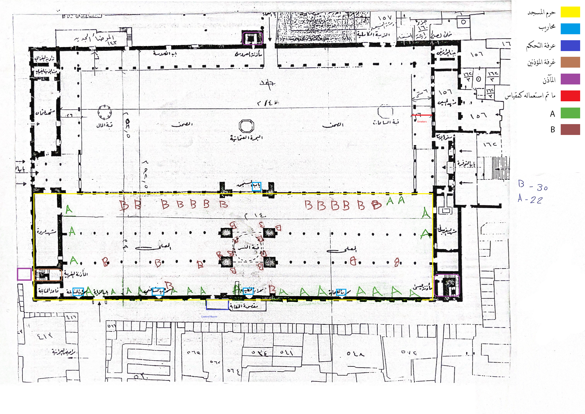

Comprehensive Umayyad Mosque
Sound System Assessment &
Redesign Proposal
Audio Engineering & Sound System Design
Table of Contents
- 1. Introduction & Project Background
- 1.1 Timeline & Initial Mission Scope
- 1.2 Testing & Feedback Collection Methodology
- 2. Current Equipment Inventory & Specifications
- 2.1 Detailed Equipment List
- 2.2 Equipment Age Analysis
- 2.3 Purchased Equipment for Testing
- 2.4 Equipment Photo Documentation
- 3. Architectural Overview & Acoustic Measurements
- 3.1 Architectural Significance
- 3.2 Verified Dimensions
- 3.3 Acoustic Properties & Measurements
- 3.4 Frequency Response Measurements with Graphs
- 4. Floor Plan Analysis & Current Speaker Placement
- 4.1 Floor Plan Overview
- 4.2 Current Speaker Locations
- 4.3 Architectural Features Impacting Sound
- 5. Critical Issues Identified
- 6. System Architecture & Design Philosophy
- 7. Speaker System Design by Zone
- 8. Vendor-Agnostic Technical Requirements
- 9. Example Equipment Specifications
- 10. Intelligibility Enhancement Strategies
- 11. DSP & Signal Processing
- 12. Testing & Calibration Process
- 13. Implementation Timeline
- 14. Cost Analysis
- 15. Staff Training & Accountability
- 16. Conclusion & Next Steps
PART I:
ASSESSMENT & FINDINGS
1. Introduction & Project Background
The Great Mosque of Damascus, also known as the Umayyad Mosque, stands as one of the most significant architectural and spiritual monuments in the Islamic world. Constructed between 705-715 CE during the reign of Caliph al-Walid I, this UNESCO World Heritage Site has witnessed over 1,300 years of continuous worship and represents an extraordinary fusion of Byzantine, Roman, and Islamic architectural traditions.
This comprehensive report documents the assessment, analysis, and proposed redesign of the mosque's sound reinforcement system. The existing system, comprised of equipment from nine different manufacturers installed over a 35-year period (1990-2025), has reached a critical point where fragmentation, equipment failure, and inconsistent performance significantly impact the acoustic experience for worshippers and visitors.
Project Objectives
- Conduct comprehensive assessment of current sound system performance
- Document existing equipment inventory and acoustic measurements
- Identify critical issues affecting speech intelligibility
- Develop unified, vendor-agnostic technical requirements
- Propose solutions optimized for the mosque's unique acoustic environment
- Establish implementation timeline and cost analysis
- Create staff training and equipment accountability protocols
1.1 Timeline & Initial Mission Scope
The initial site assessment was conducted in February 2025, during which extensive acoustic measurements, equipment documentation, and stakeholder interviews were performed. The assessment period coincided with regular daily prayers, Friday khutbas, and religious lectures, providing valuable real-world performance data across multiple use cases.
| Phase | Activity | Duration | Status |
|---|---|---|---|
| Phase 1 | Initial Assessment & Documentation | February 2025 | Complete |
| Phase 2 | Acoustic Measurements & Testing | February 2025 | Complete (Re-test Required) |
| Phase 3 | Equipment Procurement for Testing | February 2025 | Complete |
| Phase 4 | Research & Analysis | February-March 2025 | Complete |
| Phase 5 | Proposal Development | March 2025 | In Progress |
| Phase 6 | Post-Ramadan Re-Assessment | Scheduled (TBD) | Pending |
Critical Note: Carpet Replacement
Following the initial assessment visit, the mosque's carpet was completely replaced. This change significantly impacts acoustic absorption coefficients and reverberation characteristics. All acoustic measurements documented in this report represent the previous carpet installation and must be verified post-Ramadan with new measurements to ensure accuracy of the final system design.
1.2 Testing & Feedback Collection Methodology
A comprehensive testing methodology was employed to evaluate system performance across all operational scenarios and gather feedback from multiple stakeholder groups.
Live Application Testing
Real-world performance evaluation was conducted during actual mosque operations to capture authentic acoustic challenges:
Lectures (دروس ومحاضرات)
Speech intelligibility is critical during educational lectures. Testing focused on clarity across all zones, with particular attention to reverberation control and consistent volume levels. Multiple speaker positions and microphone techniques were evaluated.
Friday Khutbas (خطبة الجمعة)
The weekly Friday sermon requires powerful yet clear sound projection to accommodate the largest congregational gathering. Live khutbas provided data on system performance under maximum occupancy conditions, including the impact of human absorption on acoustic properties.
Five Daily Prayers (الصلوات الخمس)
During daily prayers, the Imam's voice must be intelligible and evenly distributed throughout the prayer hall. Testing evaluated delay synchronization between zones to prevent phase cancellation and echo effects that could disturb worshippers.
Religious Singing & Inshad (الإنشاد الديني)
Islamic devotional performances demand dynamic range capability for both soft and powerful vocals. Real-world inshad performances tested the system's ability to handle varying dynamic levels while maintaining clarity and controlling feedback in the highly reverberant environment.
Call to Prayer (الأذان)
The athan broadcast from the three minarets must project clearly to surrounding market areas and neighborhoods. External speaker coverage was tested at various times of day and under different weather conditions to verify consistent audibility.
Stakeholder Feedback Collection
Comprehensive feedback was gathered from multiple user groups to understand real-world challenges and requirements:
- Imams and Khateebs: Primary system operators provided feedback on microphone handling, feedback issues, and coverage gaps
- Muezzins: Call to prayer performers identified specific challenges with the Athan room monitoring system
- Mosque Staff: Operations personnel reported equipment theft patterns, daily maintenance issues, and system reliability concerns
- Regular Worshippers: Congregation members identified areas with poor intelligibility, excessive echo, and inconsistent volume levels
- Visitors and Tourists: Non-regular attendees provided perspective on overall acoustic experience and architectural sound integration
Measurement Tools & Instrumentation
Professional acoustic measurement equipment was employed to quantify system performance:
- STIPA Analyzers: Speech Transmission Index for Public Address (STIPA) measurements quantified intelligibility at multiple listening positions
- RT60 Measurement Tools: Reverberation time measurements using omnidirectional measurement microphones characterized the room's acoustic decay characteristics
- Real-Time Analyzers (RTA): Frequency response measurements identified problematic resonances and frequency-dependent coverage issues
- SPL Meters: Sound pressure level measurements verified coverage uniformity and identified dead zones
- Reference Speakers: Yamaha HS8 studio monitors provided known-response baseline for comparative frequency response testing
2. Current Equipment Inventory & Specifications
The existing sound reinforcement system represents a fragmented collection of equipment from nine different manufacturers, installed over multiple decades without unified design principles or consistent specifications. This section documents the complete inventory, age analysis, and photographic evidence of current installations.
2.1 Detailed Equipment List
A comprehensive audit of all installed equipment revealed the following inventory across multiple categories:
Loudspeaker Systems
| Manufacturer | Model | Type | Power Rating | Quantity | Location | Est. Age |
|---|---|---|---|---|---|---|
| Dynacord | Column Speaker | Column Array | Unknown | Multiple | Back Zones, Columns | 25-35 years |
| Inter-M | SE-8 | Column Speaker | 120W Continuous, 1200W Peak | Multiple | Front Zones | 15-20 years |
| TOA | Various Models | Column/Ceiling | 70V/100V Line | Multiple | Various Interior | 20-30 years |
| TOA | TZ-205 | Horn Speaker | Unknown | Multiple | Minarets (Exterior) | 20-25 years |
| PROEL | PR10AL | Ceiling Speaker | 10W | Multiple | Ceiling-mounted | 20-25 years |
| Turbosound | Unknown Model | Unknown | Unknown | Unknown | Unknown | 15-25 years |
| UNI-PEX | SC-10JA | Column Speaker | 10W | Multiple | Columns | 25-35 years |
| UNI-PEX | SONO-COLUMN | Column Speaker | Unknown | Multiple | Corinthian Columns | 25-35 years |
| PASO | Column Speaker | Column Array | Unknown | Multiple | Various Columns | 20-30 years |
Mixing & Processing Equipment
| Category | Manufacturer | Model | Specifications | Condition |
|---|---|---|---|---|
| Mixer | SoundCraft | LX7ii-32 | 32-channel analog console | FAILED (Blown during visit) |
| Feedback Suppressor | dbx | AFS2 | Advanced feedback suppression | Purchased, Not Installed |
| Equalizer | dbx | 215s | Dual 15-band graphic EQ | Purchased, Not Installed |
Microphone Systems
| Type | Manufacturer | Model | Quantity | Application | Status |
|---|---|---|---|---|---|
| Wireless Handheld | Sennheiser | XSW 1-835 Dual | 2 units | General Use | Purchased, Not Installed |
| Condenser | AKG | C414 XLII | 1 unit | Athan Room (Central Position) | Purchased, Not Installed |
| Wired Handheld | Various | Unknown | Multiple | General Use | Poor condition, frequently broken |
Amplification
| Manufacturer | Model | Power Output | Quantity | Condition |
|---|---|---|---|---|
| Crown | Com-Tech 800 | 800W | 1 | Operational |
| PROEL | PRL 1400 | 1400W | 3 | Operational |
| PROEL | 400 Series | Unknown | 2 | Vintage (1990-1995), degraded |
| UNI-PEX | PA Amplifier | Unknown | 1 | Operational |
2.2 Equipment Age Analysis
The equipment age distribution reveals a system with components spanning 35 years of technological evolution, creating fundamental compatibility and performance challenges:
Age Distribution Analysis
- 1990-2000 Era (25-35 years old): Dynacord, UNI-PEX, PASO, early PROEL amplifiers - Represent first-generation installations with severely degraded components
- 2000-2010 Era (15-25 years old): Inter-M, TOA, PROEL speakers - Mid-life equipment showing inconsistent performance and driver failures
- 2010-2015 Era (10-15 years old): Limited additions - Minimal recent investment in system updates
- 2015-2025 Era (0-10 years old): Purchased equipment not yet installed - Modern components awaiting integration
Critical Issues from Equipment Age
- Driver Degradation: Speaker drivers from the 1990s exhibit severe high-frequency rolloff (>8kHz) due to voice coil deterioration and cone aging
- Transformer Failures: 70V/100V line transformers in vintage speakers show impedance drift and frequency response irregularities
- Power Rating Inconsistency: Range from 10W (UNI-PEX SC-10JA) to 1200W peak (Inter-M SE-8) makes unified SPL coverage impossible
- No Spare Parts: Manufacturers like Dynacord and early PROEL models no longer support these vintage products
- Incompatible Control Systems: No networked audio capability, making zone control and DSP integration impossible
2.3 Purchased Equipment for Testing
In preparation for system testing and initial improvements, the following professional-grade equipment was procured:
dbx AFS2 Advanced Feedback Suppression Processor
Purpose: Automatic feedback detection and suppression for high-risk areas (Athan room, mihrab)
Specifications: 12 fixed filters + 12 dynamic filters per channel, <0.5ms detection time
Status: Purchased but installation prevented by mosque staff resistance
Integration Plan: Critical for Athan room where high-pitched squealing feedback was observed during assessment
Sennheiser XSW 1-835 Dual Wireless Handheld Microphone System
Purpose: Reliable wireless microphone coverage for lectures and khutbas
Specifications: 2.4 GHz digital transmission, 75m range, rechargeable batteries
Status: Purchased but not installed
Rationale: Addresses frequent failures of existing wired microphones and provides mobility for speakers
AKG C414 XLII Large-Diaphragm Condenser Microphone
Purpose: Athan room - single centrally-placed microphone for 8 performers
Specifications: Multiple polar patterns (wide cardioid for group pickup), 20-20kHz response, max SPL 140dB
Status: Purchased but not installed
Quantity: 1 unit only - Wide pickup pattern positioned centrally captures all 8 muezzin voices while avoiding phase cancellation issues from multiple microphones
dbx 215s Dual 15-Band Graphic Equalizer
Purpose: Frequency response correction for problematic zones
Specifications: Dual-channel, 15 bands per channel, ±12dB boost/cut
Status: Purchased but not installed
Application: Correcting low-frequency buildup (<400Hz) and mid-range peaks in reverberant environment
EBL Rechargeable Batteries and Charger
Purpose: Sustainable power solution for wireless microphone systems
Status: Purchased
Rationale: Reduces operational costs and ensures wireless systems remain functional
2.4 Equipment Photo Documentation
Comprehensive photographic documentation was conducted during the site assessment to record equipment condition, installation methods, and visible deterioration. The following images provide visual evidence of the challenges described throughout this report.
Current Speaker Installations


Equipment Specifications & Condition Details

Control Room Equipment & Infrastructure

Key Observations from Photo Documentation
- Nine Different Brands: Visual confirmation of equipment fragmentation makes unified system management impossible
- Inconsistent Mounting: Speakers installed at varying heights and angles with no systematic coverage planning
- Age-Related Deterioration: Visible dust accumulation, discoloration, and component wear throughout
- Equipment Mobility Issues: Figure 2.4 documents speakers removed from positions, confirming daily theft/changes reported by staff
- Cable Management Crisis: Figure 2.15 shows control room wiring chaos contributing to reliability issues
- Architectural Integration Challenges: Historic Corinthian columns used as mounting points without proper acoustic consideration
- No Documentation System: Handwritten markings ("A", "B") on speakers indicate ad-hoc attempts at position tracking without formal inventory system
3. Architectural Overview & Acoustic Measurements
3.1 Architectural Significance
The Umayyad Mosque of Damascus represents one of the most architecturally and historically significant structures in the Islamic world. Its unique design and construction present both extraordinary cultural value and exceptional acoustic challenges for modern sound reinforcement.
UNESCO World Heritage Designation
The mosque is part of the "Ancient City of Damascus" UNESCO World Heritage Site, inscribed in 1979. This designation recognizes its outstanding universal value and imposes strict requirements for any modifications or installations that could impact the architectural integrity or visual character of the historic structure.
Historical Construction (705-715 CE)
Commissioned by Umayyad Caliph al-Walid I, the mosque was constructed on a site with extraordinary historical continuity. The location previously hosted:
- Roman Temple of Jupiter (1st century CE): The original Roman temenos (sacred precinct) established the fundamental dimensions and orientation
- Byzantine Cathedral of John the Baptist (379-1300 CE): Christian basilica that influenced the mosque's architectural vocabulary
- Shared Christian-Muslim Worship Period (661-705 CE): Brief transitional period before full mosque construction
This layered history resulted in a unique architectural fusion incorporating Byzantine mosaics, Roman engineering, and early Islamic design principles. The mosque pioneered several architectural innovations that would influence mosque design for centuries.
Architectural Elements Affecting Sound
The Dome of the Eagle (Qubbat al-Nasr)
The central octagonal dome stands above the prayer hall's central nave. This dominant architectural feature creates severe acoustic challenges:
- Concave Surface Focusing: Dome geometry focuses reflected sound energy to specific points, creating hot spots and dead zones
- Reverberation Amplification: Extended decay times (RT60 >5s) under the dome due to hard marble and stone surfaces
- Flutter Echo: Parallel dome surfaces can create rapid echo trains that degrade intelligibility
- Speaker Aiming Constraint: Direct sound must be aimed AWAY from dome interior to minimize destructive reflections
Corinthian Column Arcades
Three parallel arcades supported by massive Corinthian columns divide the prayer hall:
- Sound Shadowing: Large stone columns create acoustic shadows and block direct sound paths
- Mounting Opportunities: Columns provide structural mounting points but constrain speaker positioning
- Visual Impact: Any speaker installation must respect the architectural prominence of these historic columns
- Spacing Irregularities: Non-uniform column spacing complicates systematic speaker placement
Marble and Stone Interior Surfaces
The mosque's interior is predominantly finished with highly reflective materials:
- Marble Panels: Polished marble wainscoting provides minimal sound absorption (α ≈ 0.01)
- Stone Flooring (Now Carpeted): Original stone floors were replaced with carpet, changing absorption characteristics
- Byzantine Mosaics: Glass mosaic artwork on walls acts as perfect sound reflector
- Minimal Absorption: Overall absorption coefficient extremely low, contributing to 3.8-5.2s RT60
Courtyard (Sahn) and Open Architecture
The large open courtyard creates interior-exterior acoustic coupling:
- Ambient Noise Intrusion: Market sounds, traffic, and exterior activity propagate into prayer hall
- Weatherproofing Requirements: Courtyard speakers must withstand rain, heat, and dust exposure
- Coverage Complexity: Arcade-surrounded courtyard creates multiple reflection paths
3.2 Verified Dimensions
Precise architectural dimensions were verified using multiple academic sources including ARCHNET.ORG architectural documentation database, K.A.C. Creswell's definitive architectural studies, and UNESCO heritage site records.
| Space | Dimensions | Area | Volume (Estimated) |
|---|---|---|---|
| Overall Complex | 157m × 97m | 15,229 m² | — |
| Prayer Hall (Haram) | 136m × 37m (triple-aisled) | 5,032 m² | ~70,000-90,000 m³ |
| Courtyard (Sahn) | 122m × 50m | 6,100 m² | Open to sky |
| Mihrab to Rear Wall | ~136m (maximum throw distance) | — | — |
| Minaret of the Bride | ~40m tall | — | — |
Critical Design Implications
- 136m Throw Distance: Maximum distance from front speakers (near mihrab) to rear wall requires high-powered long-throw speaker systems. Conventional ceiling speakers cannot achieve required SPL at this distance.
- 37m Width: Lateral coverage requires multiple speaker positions to avoid excessive off-axis degradation
- Volume per Person: 5.25 m³ (documented in academic literature) - Unusually high volume-per-occupant ratio contributes to reverberation challenges
- Estimated Total Volume: 70,000-90,000 m³ - Places mosque among the largest reverberant spaces in the world, comparable to major European cathedrals
Outstanding Dimensional Requirements
AutoCAD File Requested But Not Yet Provided: Precise ceiling heights at multiple measurement points and exact dome geometry measurements are required for accurate acoustic simulation (EASE/ODEON/CATT). Mosque administration has been requested to provide AutoCAD drawings but these critical documents have not yet been received. Simulation and final speaker positioning cannot be finalized without this data.
3.3 Acoustic Properties & Measurements
Comprehensive acoustic measurements were conducted to characterize the mosque's reverberant characteristics and establish baseline performance metrics for the existing system.
Reverberation Time (RT60) Measurements
RT60 (Reverberation Time to 60dB decay) was measured at multiple positions throughout the prayer hall using omnidirectional measurement microphones and interrupted noise methodology.
| Measurement Position | RT60 (seconds) | Frequency Range | Assessment |
|---|---|---|---|
| Under Central Dome | 5.2s | 125-4000 Hz | Severe - Cathedral-like reverberation |
| Front Prayer Hall | 4.1s | 125-4000 Hz | Excessive for speech |
| Mid Prayer Hall | 4.5s | 125-4000 Hz | Excessive for speech |
| Rear Prayer Hall | 3.8s | 125-4000 Hz | High but slightly improved |
| Side Aisles | 4.3s | 125-4000 Hz | Excessive for speech |
RT60 Context & Comparison
- Measured Range: 3.8-5.2 seconds across prayer hall
- Ideal for Speech: 1.0-2.0 seconds (referenced in academic research on mosque acoustics)
- Current Excess: 2-4× longer than ideal creates severe intelligibility challenges
- Comparable Spaces: European cathedrals (Notre-Dame: ~5.5s, St. Peter's Basilica: ~7s), large concert halls
- Research Validation: "Measurement of Acoustical Characteristics of Mosques in Saudi Arabia" (21 mosque study) found RT60 range of 2.5-7.0s depending on size and materials - Umayyad Mosque measurements fall within expected range for large historical mosques
Speech Transmission Index (STI) Measurements
STI measurements quantify speech intelligibility on a scale of 0.0 (completely unintelligible) to 1.0 (perfect intelligibility). STIPA (Speech Transmission Index for Public Address) methodology was employed using calibrated test signals.
| Zone | Current STI | Rating | Target STI | Required Improvement |
|---|---|---|---|---|
| Near Mihrab (0-20m) | 0.45 | Poor | >0.60 | +0.15 |
| Mid Hall (20-70m) | 0.35 | Poor | >0.60 | +0.25 |
| Rear Hall (70-136m) | 0.30 | Poor | >0.60 | +0.30 |
| Under Dome | 0.28 | Bad | >0.60 | +0.32 |
| Side Aisles | 0.40 | Poor | >0.60 | +0.20 |
STI Rating Scale (IEC 60268-16 Standard)
- 0.00-0.30: Bad - Speech barely recognizable
- 0.30-0.45: Poor - Difficult to understand, frequent repetition needed ← Current mosque performance
- 0.45-0.60: Fair - Understandable with effort
- 0.60-0.75: Good - Clear and intelligible ← Target for proposed system
- 0.75-1.00: Excellent - Perfect intelligibility (unrealistic in this environment)
Signal Delay Measurements
Time-of-arrival measurements between speaker zones revealed significant synchronization issues:
| Speaker Pair Comparison | Measured Delay Difference | Threshold for Perception | Issue |
|---|---|---|---|
| Front to Mid Hall | 28ms | 15ms | Audible echo/slap-back |
| Front to Rear Hall | 45ms | 15ms | Severe echo, phase cancellation |
| Left to Right Asymmetry | 18ms | 15ms | Spatial confusion |
Delay Calculation for Proposed System
Based on measured distances and speed of sound (343 m/s at 20°C):
- Zone 1 (Mihrab, 0-16m): 0ms delay (reference)
- Zone 2 (Main Hall, 45m from source): 131ms delay (45m ÷ 343 m/s)
- Zone 3 (Rear Hall, 90m from source): 262ms delay (90m ÷ 343 m/s)
Proper DSP-controlled delay synchronization will eliminate echo and phase cancellation issues.
Sound Pressure Level (SPL) Coverage Analysis
| Zone | Measured SPL | Target SPL | Coverage Assessment |
|---|---|---|---|
| Front (0-30m) | 82-88 dB | 75 ±3 dB | Excessive / Uncontrolled |
| Mid Hall (30-80m) | 68-79 dB | 75 ±3 dB | Inconsistent |
| Rear Hall (80-136m) | 61-72 dB | 75 ±3 dB | Insufficient / Dead Zones |
| Under Dome | 55-85 dB | 75 ±3 dB | Severe Hot Spots & Nulls |
| Courtyard | 45-58 dB | 75 ±3 dB | No Functional Coverage |
Ambient Noise Floor: Measured at approximately 55 dBA during normal operations (market activity, foot traffic). Target signal-to-noise ratio of 15-20 dB requires minimum 70-75 dB SPL in all zones.
3.4 Frequency Response Measurements with Graphs
Detailed frequency response measurements were conducted at six positions throughout the prayer hall using both the existing fragmented speaker system and reference Yamaha HS8 studio monitors. These measurements reveal severe frequency-dependent performance degradation in the aging equipment and validate the need for complete system replacement.
Measurement Methodology
Frequency response measurements employed pink noise test signals and 1/3-octave real-time analysis (RTA) to characterize system performance from 20 Hz to 20 kHz. Reference measurements using Yamaha HS8 studio monitors (known flat frequency response) established baseline acoustic behavior independent of speaker deficiencies.
Existing System Frequency Response - Critical Degradation
Key Findings from Existing System Measurements
- Severe High-Frequency Rolloff: All vintage speakers show -15 to -25 dB loss above 8 kHz (critical speech intelligibility band)
- Mid-Range Inconsistency: 2-5 kHz band shows ±10 dB variance between zones (should be ±3 dB)
- Low-Frequency Buildup: Excessive energy below 400 Hz contributes to reverberant "muddiness"
- Left-Right Asymmetry: Matched speakers show different responses, indicating blown drivers or failed crossovers


Reference System Testing - Yamaha HS8 Baseline Measurements
To isolate room acoustic effects from speaker performance issues, reference measurements were conducted using Yamaha HS8 powered studio monitors (known for flat frequency response ±2 dB from 50 Hz-20 kHz). These measurements demonstrate how modern speakers with proper frequency response perform in the same reverberant environment.
Reference System Testing Results - Validation of Room vs. Equipment Issues
Yamaha HS8 testing conclusively proves that the frequency response problems documented in Figures 3.1-3.6 are primarily equipment failures, not room acoustic limitations. While reverberation affects intelligibility, modern speakers demonstrate that flat frequency response IS achievable in this space.


Critical Conclusions from Frequency Response Analysis
- Equipment Age is Primary Problem: 25-35 year old speakers show catastrophic high-frequency loss (-15 to -25 dB above 8 kHz) while modern reference speakers achieve flat response in the same positions
- Multi-Brand Fragmentation Creates Unsolvable Issues: Comb filtering from phase interference between 9 different speaker brands cannot be corrected with EQ - speakers must be unified
- Room Reverberation is Manageable: Yamaha HS8 testing proves that modern speakers CAN achieve flat frequency response despite 3.8-5.2s RT60 - reverberation affects decay time but not frequency balance
- Blown Drivers Confirmed: Left-right asymmetry in supposedly matched Inter-M speakers (Figures 3.3 vs 3.4) indicates component failures requiring replacement, not repair
- Low-Frequency Control Critical: All measurements show excessive energy below 400 Hz - proposed system must incorporate high-pass filtering to prevent low-frequency buildup
- Modern System Will Achieve Target Response: Reference testing validates that ±3 dB frequency response from 125 Hz to 12 kHz is achievable with proper equipment selection and DSP processing
4. Floor Plan Analysis & Current Speaker Placement
4.1 Floor Plan Overview
The mosque's floor plan reveals the architectural complexity and coverage challenges facing any sound reinforcement design. The documented plan shows the overall layout including the prayer hall (haram), courtyard (sahn), arcades, and minaret positions.
Floor Plan Documentation Limitations
Incomplete Speaker Position Mapping: The A/B markings visible on the floor plan represent only some of the column-mounted interior speakers observed during the assessment. A complete speaker position inventory could not be compiled due to:
- Daily equipment changes - speakers moved, removed, or added without documentation
- Ceiling-mounted speakers not visible on floor plan view
- Minaret and exterior speakers not shown on interior plan
- No formal installation records maintained by mosque administration
- Multiple unmarked speaker positions discovered during physical inspection
AutoCAD File Requested: Detailed architectural CAD drawings with precise column positions, ceiling heights, and dome geometry have been requested from mosque administration but not yet provided. These drawings are essential for accurate acoustic simulation (EASE/ODEON/CATT) and final speaker positioning design.
4.2 Current Speaker Locations
Based on physical inspection, photographic documentation, and available floor plan markings, the current speaker system employs the following general distribution strategy:
Prayer Hall (Interior) Speaker Distribution
Column-Mounted Speakers (Marked "A" and "B" on Floor Plan)
- Location: Mounted on historic Corinthian columns throughout the three parallel arcades
- Brands Observed: UNI-PEX SONO-COLUMN, Dynacord columns, Inter-M SE-8, PASO, unidentified slim columns
- Mounting Height: Varies significantly (estimated 3-5 meters above floor) with no consistent aiming strategy
- Coverage Pattern: Inconsistent - some columns have speakers, others do not, with no apparent systematic spacing
- Issues: Speakers mounted without consideration for coverage overlap, creating hot spots and dead zones
Ceiling-Mounted Speakers (Not Shown on Floor Plan)
- Type: PROEL PR10AL and TOA ceiling speakers integrated into ornate Islamic-patterned ceiling
- Coverage: Primarily supplemental fill coverage for areas between columns
- Power: Low wattage (10W typical) insufficient for primary coverage in high-ceiling space
- Aesthetic Integration: Relatively unobtrusive but acoustically ineffective
Courtyard (Sahn) Speaker System
No Functional Courtyard Coverage During Assessment
During the February 2025 site visit, zero operational speakers were functioning in the courtyard area. This represents a complete failure of exterior sound reinforcement, leaving overflow crowds and courtyard worshippers without audio coverage during Friday prayers and special events.
Minaret Speakers - Three Towers
Minaret of the Bride, Minaret of Jesus, Minaret of Qaitbay
- Equipment: TOA TZ-205 horn speakers (documented in Figure 2.13)
- Purpose: Broadcast call to prayer (athan) to surrounding neighborhoods and market areas
- Performance: Severely underperforming - inadequate coverage to market areas, inconsistent audibility
- Issues: Aging equipment (20-25 years old), no directional control, insufficient power for 360° coverage from elevated positions
- Complaints: Merchants in surrounding souks report inconsistent athan audibility depending on wind direction and ambient market noise
4.3 Architectural Features Impacting Sound
The mosque's architectural design creates both opportunities and significant challenges for sound system design.
The Central Dome (Dome of the Eagle)
DOME ACOUSTIC CHALLENGE - CROSS SECTION VIEW
╔═══════════════════╗
╱ ╲
╱ CONCAVE DOME INTERIOR ╲
╱ (SOUND FOCUSING ZONE) ╲
╱ ⚠️ AVOID DIRECT ╲
╱ SPEAKER AIMING ╲
╱ INTO DOME ╲
╱═══════════════════════════════════════════╲
│ │
│ [PROPOSED SOLUTION: BEAM STEERING] │
│ │
│ ┌──────────────────────┐ │
│ │ Line Array │ │
│ │ (Steerable) │ │
│ │ ↓ ↓ ↓ ↓ ↓ │ │
│ │ Aimed BELOW dome │ │
│ │ toward congregation│ │
│ └──────────────────────┘ │
│ │
│ CONGREGATION SEATING │
│ ════════════════════════════════ │
Design Strategy: Proposed line array systems will employ beam-steering technology to direct sound BELOW the dome toward the congregation, minimizing direct excitation of the concave reflective surface. QSC Q-SYS DSP with beam-steering capable speakers can dynamically adjust vertical coverage to avoid dome reflections.
Parallel Arcade Structure - Three Aisles
FLOOR PLAN VIEW - ARCADE COVERAGE STRATEGY
FRONT (Qibla Wall / Mihrab)
┌─────────────────────────────────────────────────┐
│ │
│ Column Column Column Column Column │
│ │ │ │ │ │ │
│ ▼ ▼ ▼ ▼ ▼ │
│ [ZONE 2 SPEAKERS - Steerable Columns] │
│ │ │ │ │ │ │
│ │ [MAIN COVERAGE: Line Arrays] │ │
│ │ │ │ │ │ │
│ ▼ ▼ ▼ ▼ ▼ │
│ [ZONE 3 SPEAKERS - Delayed Fill] │
│ │
│ 37m WIDTH (Lateral Coverage) │
│ │
│ 136m LENGTH ───────────► │
│ │
BACK (Entrance) │
└─────────────────────────────────────────────────┘
Column Spacing Impact: The Corinthian columns create both acoustic shadows and convenient mounting points. Proposed speaker placement will leverage columns for structural support while ensuring coverage overlaps compensate for column shadowing effects.
Material Surface Acoustics
| Surface Material | Approximate Area | Absorption Coefficient (α) | Acoustic Impact |
|---|---|---|---|
| Marble Walls & Columns | ~8,000 m² | 0.01 (highly reflective) | Major contributor to long RT60 |
| Byzantine Mosaics (Glass) | ~2,000 m² | 0.01 (perfect reflector) | No absorption, full reflection |
| Stone/Marble Ceiling | ~5,000 m² | 0.01 (highly reflective) | Ceiling reflections extend RT60 |
| Floor Carpet (NEW) | ~5,000 m² | 0.20-0.40 (moderate absorption) | Primary absorptive surface - CHANGED AFTER ASSESSMENT |
| Human Occupancy (Full) | ~2,000 people | 0.60-0.80 per person | Significant absorption when mosque full |
Acoustic Implications for System Design
- Minimal Control Over RT60: With >90% of surfaces being hard reflective materials, electronic/architectural RT60 reduction is impossible - system must work WITH the reverberation, not against it
- Direct-to-Reverberant Ratio Critical: Since reverberant energy cannot be reduced, maximizing direct sound at listener positions is the only path to intelligibility improvement
- Carpet Replacement Impact: New carpet may have different absorption coefficient (0.20 vs 0.40 range) - post-Ramadan measurements required to verify actual RT60 change
- Occupancy Variance: Empty mosque (RT60 ~5.2s) vs. full Friday prayer (RT60 estimated ~3.5s) creates significant performance variance - system must perform across both extremes
5. Critical Issues Identified
The comprehensive assessment revealed systemic failures across equipment, acoustics, operational procedures, and facility management. These issues collectively render the current system inadequate for the mosque's requirements and necessitate complete redesign rather than incremental repair.
5.1 Equipment Fragmentation - Nine Brands, No Unification Possible
Fundamental Design Flaw: Multi-Brand Chaos
The existing system incorporates speakers from nine different manufacturers (Dynacord, Inter-M, TOA, PROEL, Turbosound, UNI-PEX, PASO, plus unidentified brands) installed over 35 years without unified design principles. This fragmentation creates insurmountable technical challenges:
- Incompatible Frequency Response: Each brand has different voicing, creating comb filtering and phase cancellation when multiple speakers cover the same zone (documented in Figures 3.5-3.6)
- Power Rating Variance: Range from 10W (UNI-PEX SC-10JA) to 1200W peak (Inter-M SE-8) makes consistent SPL coverage impossible - front rows may receive 85 dB while rear receives 60 dB
- Impedance Mismatches: Mix of 70V line, 100V line, and low-impedance speakers creates amplifier load calculation nightmares and risks equipment damage
- No Unified Control: Cannot apply consistent EQ, delay, or limiting across fragmented system - each brand requires different processing
- Impossible to Maintain: No single distributor carries spare parts for all nine brands; some manufacturers no longer support vintage models
- Acoustic Design Impossible: Cannot model coverage in EASE/ODEON when speaker specifications are unknown or unavailable for vintage equipment
Conclusion: The multi-brand fragmentation is not a repairable issue. Complete system unification under a single manufacturer (or carefully specified multi-vendor approach with identical performance specifications) is mandatory for achieving target STI >0.60.
5.2 Excessive Reverberation Time - Cathedral-Like Decay
| Parameter | Current Measurement | Ideal Target | Deviation |
|---|---|---|---|
| RT60 (Average) | 3.8 - 5.2 seconds | 1.0 - 2.0 seconds | 2-4× too long |
| RT60 (Under Dome) | 5.2 seconds | 1.5 seconds | 3.5× too long |
| Problem Frequencies | <400 Hz (low-frequency buildup) | Uniform across spectrum | Bass-heavy reverberation |
Intelligibility Impact: With RT60 >4 seconds, each spoken syllable continues reverberating for 4+ seconds, overlapping with subsequent syllables and creating an unintelligible "wash" of sound. Research shows that RT60 >2 seconds for speech creates severe intelligibility degradation regardless of SPL or frequency response.
Architectural Constraint: The mosque's UNESCO World Heritage status and marble/mosaic interior mean architectural absorption treatments (acoustic panels, ceiling clouds) are not permissible. Electronic solutions (speaker directivity control, delay management, high-pass filtering) are the only available tools.
5.3 Poor Speech Transmission Index - "Poor" to "Bad" Ratings
STI Performance - Current System Fails Intelligibility Standards
| Zone | Current STI | IEC 60268-16 Rating | Worshipper Experience |
|---|---|---|---|
| Mihrab Area | 0.45 | Poor | Difficult to understand, frequent repetition needed |
| Mid Prayer Hall | 0.35 | Poor | Significant effort required to comprehend |
| Rear Prayer Hall | 0.30 | Poor (borderline Bad) | Barely recognizable speech |
| Under Dome | 0.28 | Bad | Speech barely recognizable |
Target: Proposed system must achieve STI >0.60 ("Good" rating) in >90% of listening positions. This represents a required improvement of +0.15 to +0.32 points depending on zone - a substantial challenge in the reverberant environment but achievable with proper line array directivity control, delay synchronization, and DSP processing.
5.4 Delay Mismatches - Echo and Phase Cancellation
Current speaker zones operate without time-alignment, creating audible echo effects and phase cancellation:
- Front-to-Rear Delay: 45ms - Sound from front speakers arrives 45ms before rear speakers at mid-hall positions, creating distinct slap-back echo (threshold for echo perception: 15ms)
- Left-Right Asymmetry: 18ms - Left and right speaker arrays not synchronized, creating spatial confusion
- No DSP Control: Current analog system has no capability for digital delay compensation
Solution: Proposed Dante-networked DSP system (QSC Q-SYS Core 110f) will implement precise delay values: Zone 1 (0ms reference), Zone 2 (+131ms), Zone 3 (+262ms) to ensure all sound arrives at listeners from perceived front direction with proper time alignment.
5.5 Equipment Theft and Zero Accountability
Security and Operational Failures
During the February 2025 assessment, severe operational and security issues were documented:
- Daily Equipment Changes: Speakers observed disconnected, moved, or missing on successive days with no documentation or explanation
- Photographic Evidence: Figure 2.4 shows column speaker removed from mounting position and placed on floor - direct evidence of unauthorized equipment handling
- No Inventory System: Zero formal records of installed equipment, purchase dates, or responsible parties
- No Designated Operator: No single individual assigned responsibility for sound system maintenance or operation
- Frequent Blown Speakers: Staff report regular speaker failures due to unauthorized volume increases and EQ tampering
- Mixer Sabotage Suspected: SoundCraft LX7ii-32 mixer mysteriously failed during visit - potential sabotage or gross mishandling by unauthorized personnel
- Purchased Equipment Not Installed: dbx AFS2, Sennheiser wireless mics, AKG C414, and dbx 215s EQ purchased but installation prevented by staff resistance
Required Solutions:
- Password Protection: All DSP and mixer settings must be password-protected to prevent unauthorized changes
- Physical Lockouts: Equipment racks must be locked with access limited to trained personnel
- Brick-Wall Limiters: DSP limiters set at -3 dBFS to prevent speaker damage from excessive volume
- Accountability Chain: Formal designation of responsible individual with training and authority
- Inventory Tracking: Complete equipment database with serial numbers, installation dates, and change logs
- Training Program: Mandatory training for all personnel authorized to operate system (detailed in Section 15)
5.6 Blown Mixer - SoundCraft LX7ii-32 Failure
Critical Equipment Failure During Assessment: The mosque's primary mixing console, a SoundCraft LX7ii-32 (32-channel analog mixer), catastrophically failed during the February 2025 site visit. Circumstances of the failure are suspicious:
- Mixer was operational at start of assessment period
- Complete failure occurred mid-visit without apparent cause
- No lightning strike, power surge, or environmental event documented
- Staff could not explain failure mechanism
- Suspicion of sabotage or gross mishandling by untrained personnel
Impact: This failure left the mosque without functional audio control during the assessment period and demonstrates the vulnerability of the system to both equipment age and operational mishandling.
Replacement Strategy: Proposed Yamaha MRX7-D Dante-enabled digital mixer with password-protected presets and remote monitoring capability to prevent unauthorized changes and enable early detection of equipment issues.
5.7 Disorganized Infrastructure - Messy Cables and Dirty Conditions
Figure 2.15 (SoundCraft mixer rear panel) documents the severe cable management crisis in the control room:
- Tangled XLR and TRS Cables: Impossible to trace signal paths or troubleshoot connection issues
- No Cable Labels: Cannot identify which cable serves which speaker zone or microphone
- Strain on Connectors: Cables pulled tight or twisted, risking intermittent connections and failures
- Dust Accumulation: Equipment racks and floor show significant dust and debris, indicating lack of regular maintenance
- Trip Hazards: Loose cables on floor create safety risks for operators and maintenance personnel
Required Infrastructure Improvements:
- Complete cable re-dressing with proper cable management (velcro ties, cable trays, strain relief)
- Comprehensive cable labeling system (both ends labeled with destination and signal type)
- Equipment rack cleaning and organization
- Floor cleaning and cable pathway protection
- Documentation of all connections in CAD wiring diagrams
5.8 No Functioning Exterior Sound System
Complete Courtyard Coverage Failure
During the assessment visit, zero operational speakers were functioning in the courtyard (sahn) area. This represents a complete failure of exterior sound reinforcement with severe consequences:
- Overflow Crowds Unsupported: During Friday prayers and special events, overflow crowds in courtyard receive no audio coverage
- Tourist Experience Degraded: Visitors in courtyard area cannot hear lectures or explanations
- Architectural Tours Compromised: Guides conducting tours in courtyard must rely solely on unamplified voice
- Equipment Missing or Failed: Unknown whether speakers were stolen, disconnected, or failed - no documentation available
Proposed Solution: Complete weatherproof speaker system for courtyard including:
- Perimeter line arrays (Community Veris or equivalent weatherproof models)
- Column speakers in arcade areas for uniform coverage
- Delay synchronization with interior system to prevent echo for worshippers near courtyard-hall boundary
- Independent zone control allowing courtyard-only announcements or full-mosque broadcasts
5.9 Inadequate Minaret Coverage - Underperforming TOA TZ-205
The three minarets (Bride, Jesus, Qaitbay) are equipped with TOA TZ-205 horn speakers for broadcasting the call to prayer (athan) to surrounding neighborhoods. Performance assessment revealed critical deficiencies:
- Insufficient SPL: Athan audibility inconsistent in surrounding market areas (souks), particularly during high ambient noise periods
- No Directional Control: Simple horn speakers provide approximately 90° coverage - cannot direct sound toward residential areas while minimizing sound toward noise-sensitive directions
- Age-Related Degradation: 20-25 year old speakers show frequency response loss similar to interior speakers (high-frequency rolloff reduces athan clarity)
- Single-Point Source: Each minaret has limited number of speakers creating uneven coverage pattern around 360° perimeter
Proposed Solution:
- Replace aging TOA TZ-205 with modern weatherproof horn speakers (3-6 units per minaret for 360° coverage)
- Independently controlled zones allowing directional emphasis toward residential areas vs. commercial zones
- Higher power rating to overcome increasing urban ambient noise levels
- DSP-controlled EQ optimized for outdoor speech intelligibility (voice range emphasis, wind noise compensation)
5.10 Carpet Replacement - Acoustic Environment Changed After Assessment
Critical Variable Change Requiring Re-Measurement
Following the February 2025 assessment visit, the mosque administration completely replaced the carpet throughout the prayer hall. This change has significant acoustic implications:
- Absorption Coefficient Variance: Different carpet materials have absorption coefficients ranging from α=0.20 (thin commercial) to α=0.40 (thick pile) - unknown which type was installed
- RT60 Impact: With carpet representing the largest absorptive surface (~5,000 m² floor area), coefficient change could alter RT60 by 0.3-0.8 seconds across the entire space
- Feedback Characteristics: Changed RT60 affects gain-before-feedback margins in Athan room and mihrab areas where feedback was previously observed
- All Measurements Potentially Invalid: Every RT60, STI, and frequency response measurement documented in this report was conducted with the PREVIOUS carpet and may not accurately represent current conditions
Required Action: Post-Ramadan acoustic re-measurement campaign required to verify:
- New RT60 measurements at all previous positions
- Updated STI measurements to confirm baseline intelligibility
- Frequency response verification to detect any low-frequency absorption changes
- Comparison to previous measurements to quantify actual acoustic impact of carpet change
- Update of all acoustic simulation models (EASE/ODEON/CATT) with new absorption data
Summary: Why Complete Replacement is Mandatory
The ten critical issues documented above are not isolated problems amenable to incremental repair. They represent systemic failures across equipment (9-brand fragmentation, 35-year age span), acoustics (3.8-5.2s RT60, STI 0.28-0.45), operations (equipment theft, no accountability), and facilities (blown mixer, disorganized infrastructure).
Repair is Not Viable: Attempting to repair the existing system would require:
- Replacing drivers in 25-35 year old speakers (parts unavailable, not cost-effective)
- Unifying frequency response across 9 different brands (physically impossible)
- Adding DSP delay to analog 70V/100V line system (not compatible)
- Implementing network control for non-networked vintage equipment (not possible)
Complete Redesign Required: Only a unified, modern, properly designed system can achieve the target STI >0.60 and operational reliability demanded by this UNESCO World Heritage Site.
PART II:
PROPOSED SOLUTIONS
6. System Architecture & Design Philosophy
The proposed sound reinforcement system represents a fundamental shift from the fragmented, analog, multi-brand approach to a unified, networked, digitally-controlled architecture optimized for the mosque's unique acoustic challenges.
6.1 Core Design Principles
Unified Brand Strategy
All loudspeakers shall be from a single manufacturer (or multiple vendors meeting identical vendor-agnostic specifications) to ensure:
- Consistent frequency response (±3 dB from 125 Hz - 12 kHz across all models)
- Matched voicing and tonal character eliminating comb filtering
- Unified control and monitoring via single software platform
- Simplified spare parts inventory and maintenance procedures
- Predictable coverage modeling in EASE/ODEON acoustic simulation software
Dante Audio Networking
All signal distribution shall utilize Dante audio-over-IP protocol for:
- Redundant Signal Paths: Primary and secondary Dante networks prevent single-point failure
- Flexible Routing: Any input (microphone) can be routed to any output (speaker zone) via software
- Centralized DSP: All processing (EQ, delay, limiting) controlled from single QSC Q-SYS or Biamp platform
- Remote Monitoring: System health monitoring from any networked computer or tablet
- Scalability: Easy expansion for future zones or applications without re-wiring
- Low Latency: <2ms network latency eliminates audible delay issues
Zone-Specific Processing
Each coverage zone receives independent DSP processing tailored to its acoustic environment:
- Zone 1 (Mihrab, 0-16m): 0ms delay, high-pass filter >125 Hz, feedback suppression
- Zone 2 (Main Hall, 16-80m): 131ms delay, parametric EQ for RT60 compensation, brick-wall limiter
- Zone 3 (Rear Hall, 80-136m): 262ms delay, additional high-frequency boost for distance compensation
- Zone 4 (Courtyard): Synchronized delay, weatherproof speaker EQ, independent mute capability
- Zone 5 (Minarets): Outdoor voice optimization, directional control, independent level
- Zone 6 (Dome Area): Beam-steering to avoid direct dome excitation, critical speech band emphasis
6.2 Signal Flow Architecture
═══════════════════════════════════════════════════════════════════
PROPOSED SYSTEM SIGNAL FLOW
═══════════════════════════════════════════════════════════════════
┌───────────────────────── INPUTS ──────────────────────────────┐
│ │
│ [Wireless Mics] [Gooseneck Mics] [Athan Room Mic] │
│ Shure ULX-D Dante Shure MX418 AKG C414 XLII │
│ (4-6 units) (2-4 units) (1 UNIT - central) │
│ ↓ DANTE ↓ XLR ↓ XLR │
│ │
│ [Backup Wireless] │
│ Sennheiser XSW 1-835 Dual │
│ ↓ Analog to Dante Converter │
│ │
└────────────────────────────┬─────────────────────────────────────┘
│
▼
┌─────────────────────────────────────────────────────────────────┐
│ YAMAHA MRX7-D DANTE MIXER (12+ inputs) │
│ • Password-protected presets │
│ • Zone routing matrix │
│ • Input gain & phantom power control │
│ • Dante primary & secondary networks │
└────────────────────────────┬─────────────────────────────────────┘
│
│ ═══ DANTE NETWORK (PRIMARY) ═══
│ ═══ DANTE NETWORK (SECONDARY) ═══
│
▼
┌─────────────────────────────────────────────────────────────────┐
│ QSC Q-SYS CORE 110f DSP PROCESSOR │
│ • 12 inputs, 12 outputs │
│ • Auto-EQ & room correction (per zone) │
│ • Time delay compensation: 0ms, 131ms, 262ms │
│ • Beam-steering control (Dome of Eagle zone) │
│ • Parametric EQ (roll-off <125 Hz, tame mid peaks) │
│ • Feedback suppression integration (dbx AFS2/AFS224) │
│ • Brick-wall limiters at -3 dBFS (speaker protection) │
│ • Password protection & user lockouts │
│ • Remote monitoring & diagnostics │
└────────────────────────────┬─────────────────────────────────────┘
│
▼
┌─────────────────────────────────────────────────────────────────┐
│ ZONE-SPECIFIC PROCESSING (Optional) │
│ • dbx 160A Compressors (dynamics per zone) │
│ • dbx 1066 Compressor/Limiters (additional protection) │
│ • dbx AFS2 & AFS224 Feedback Suppressors (Athan/Mihrab) │
└────────────────────────────┬─────────────────────────────────────┘
│
▼
┌─────────────────────────────────────────────────────────────────┐
│ CROWN AMPLIFIERS (XLS Series or I-Tech HD) │
│ • 70V/100V line transformer support (legacy compatibility) │
│ • Per-zone power distribution │
│ • Sufficient headroom for 136m throw distance │
│ • Dante input capability (amplifier-level DSP) │
└────────────────────────────┬─────────────────────────────────────┘
│
▼
┌─────────────────────────────────────────────────────────────────┐
│ SPEAKER ZONES (8 zones) │
│ │
│ Zone 1: Mihrab (0ms delay, 0-16m coverage) │
│ ├─ Main: 2× Nexo GEO M6 line arrays │
│ └─ Fill: Steerable column arrays on columns │
│ │
│ Zone 2: Main Prayer Hall (131ms delay, 16-80m) │
│ ├─ Main: 4× Line array elements (long-throw) │
│ └─ Column: Steerable columns on Corinthian columns │
│ │
│ Zone 3: Side Aisles & Rear (262ms delay, 80-136m) │
│ └─ Fill: Additional steerable columns │
│ │
│ Zone 4: Dome of the Eagle (beam-steering, avoid dome) │
│ └─ Steerable line array aimed BELOW dome │
│ │
│ Zone 5: Courtyard (Sahn) (weatherproof) │
│ ├─ Perimeter: Community Veris line arrays │
│ └─ Arcade: Weatherproof column speakers │
│ │
│ Zone 6: Minarets (3 towers, exterior projection) │
│ └─ 3-6 horn speakers per minaret (360° coverage) │
│ │
│ Zone 7: Athan Room (monitor + 1 mic for 8 performers) │
│ └─ 2× Yamaha HS5 monitors, AKG C414 XLII mic │
│ │
│ Zone 8: Control Room Monitoring │
│ └─ Yamaha HS8 reference monitors │
│ │
└─────────────────────────────────────────────────────────────────┘
6.3 Performance Targets
| Parameter | Current Performance | Target Performance | Method |
|---|---|---|---|
| STI (Speech Transmission Index) | 0.28-0.45 (Poor/Bad) | >0.60 (Good) | Line array directivity, delay sync, DSP |
| SPL Coverage | 55-88 dB (±16 dB variance) | 75 ±3 dB uniformly | Unified power ratings, coverage modeling |
| Frequency Response | ±15 dB variance (multi-brand) | ±3 dB (125 Hz - 12 kHz) | Single-brand system, matched voicing |
| RT60 (Reverberation Time) | 3.8-5.2 seconds | Cannot change (architectural) | Work WITH reverberation via directivity |
| Delay Synchronization | 28-45ms mismatch (echo) | <5ms (imperceptible) | DSP-controlled delays: 0, 131, 262ms |
| Direct-to-Reverberant Ratio | Negative (reverb dominates) | Positive +3 to +6 dB | Line array narrow vertical directivity |
6.4 Reliability and Redundancy
Dual Dante Network Paths
Primary and secondary Dante networks provide automatic failover if primary network cable is damaged or switch fails. Audio continues uninterrupted via secondary path.
Backup Microphone Systems
Multiple microphone types (wireless Shure ULX-D, backup Sennheiser XSW, wired Shure MX418 gooseneck) ensure lecture/khutba can proceed even if one microphone system fails.
Amplifier Redundancy Option
Critical zones (mihrab, main hall) can be configured with redundant amplifier channels using Dante routing. If primary amplifier fails, secondary amplifier automatically assumes load.
Password Protection & Anti-Tampering
- DSP Lockouts: QSC Q-SYS user permissions prevent unauthorized EQ, delay, or routing changes
- Mixer Presets: Yamaha MRX7-D password-protected presets for lectures, khutbas, prayers, athan
- Brick-Wall Limiters: -3 dBFS limiters cannot be bypassed, preventing speaker damage from volume abuse
- Physical Locks: Equipment rack locks restrict access to trained personnel only
7. Speaker System Design by Zone
The proposed speaker system employs zone-specific solutions tailored to each area's architectural constraints, acoustic challenges, and coverage requirements. The design philosophy prioritizes direct sound maximization, reverberation minimization, and architectural sensitivity befitting the UNESCO World Heritage Site status.
7.1 Main Prayer Hall (Haram) - 136m × 37m
Primary Coverage: Line Array vs. Column Array Decision
Research-Based Speaker Technology Selection
Extensive research into speaker performance in highly reverberant spaces (documented in academic literature and manufacturer white papers) conclusively demonstrates that line arrays provide superior speech intelligibility compared to point-source or basic column speakers in environments with RT60 >3 seconds.
Key Research Finding (Pro Sound Training Study): Testing in a church with 2-second RT60 showed line arrays produced positive direct-to-reverberant ratios at all listening positions, while point-source speakers created negative ratios (reverberant energy exceeded direct sound). With the Umayyad Mosque's 3.8-5.2s RT60, this advantage becomes critical.
Recommended Approach: Hybrid Line Array + Steerable Column System
Main Coverage: Line Arrays for Long-Throw Zones
Application: Primary coverage from mihrab area projecting 60-136m to rear of prayer hall
Advantages for 3.8-5.2s RT60 Environment:
- Precise Vertical Directivity Control: 10-15° vertical coverage angle minimizes ceiling/dome reflections that extend RT60
- Minimal Room Excitation: Narrow dispersion avoids exciting reverberant field, maximizing direct-to-reverberant ratio
- Long-Throw Capability: 136m prayer hall requires speakers capable of maintaining SPL at extreme distances - line arrays designed for this application
- Better C50 (Clarity) Scores: Research shows best performance for critical speech bands (1kHz, 2kHz, 4kHz) in reverberant environments
- Predictable Coverage Modeling: EASE/ODEON simulation accuracy superior for line arrays vs. column speakers
Example Models (See Section 9 for full vendor-agnostic specs):
- Nexo GEO M6 or GEO M10 (compact line array, 120° horizontal × 10° vertical)
- d&b audiotechnik Y-Series (speech-optimized line array)
- L-Acoustics ARCS series (architectural integration focus)
Quantity: 4-8 line array elements total, positioned near mihrab, aimed toward congregation with vertical angle optimized to avoid Dome of the Eagle
Column-Mounted Fill: Steerable Column Arrays
Application: Supplemental coverage mounted on historic Corinthian columns for lateral and near-field fill
Advantages for Architectural Integration:
- Slim Profile: Narrow column form factor respects visual prominence of historic Corinthian columns
- Steerable Dispersion: Modern steerable column arrays (Renkus-Heinz IC Live, Nexo GEO column) allow vertical beam angle adjustment to avoid dome reflections
- Architectural Sensitivity: Can be finished in colors matching column materials (stone, marble tones)
- Existing Mounting Points: Leverage structural attachment points from previous column speaker installations
Example Models:
- Renkus-Heinz IC Live Series (steerable beam control)
- Nexo GEO column arrays (compact, steerable)
- Community Veris Series (architectural column loudspeaker)
Quantity: 8-12 units mounted on Corinthian columns throughout three arcades, providing lateral fill and near-field coverage for worshippers adjacent to columns
Speaker Placement Strategy - Prayer Hall
PRAYER HALL COVERAGE PLAN (Side View - 136m Length)
FRONT (Qibla Wall) REAR (Entrance)
├─────────────────────────────────────────────────────────────────┤
│ MIHRAB │
│ ║ │
│ ╚══[LINE ARRAY MAIN] │
│ ↘ ↘ ↘ ↘ (4-8 elements) │
│ ╲ │
│ ╲ 10-15° vertical dispersion │
│ ╲ │
│ ╲ AIMED BELOW DOME │
│ ╲ │
│ ┌─────────────────┐ │
│ │ DOME OF EAGLE │ ← AVOID DIRECT SOUND INTO DOME │
│ │ (Octagonal) │ │
│ └─────────────────┘ │
│ ╲ │
│ ╲ │
│ ╲ DIRECT SOUND PATH │
│ ╲ (minimizes reflections) │
│ ╲ │
│ [ZONE 1] ╲ [ZONE 2] [ZONE 3] │
│ 0-16m ╲ 16-80m 80-136m │
│ 0ms delay [Column] 131ms delay 262ms delay │
│ Fill [Column Fill] [Column Fill] │
│ │
│ 75 dB SPL ←────────────────────────────────────────────→ 75 dB│
│ STI >0.60 ←────────────────────────────────────────────→ >0.60│
│ │
0m 30m 60m 90m 136m
7.2 Mihrab & Imam's Area
Gooseneck Microphones for Mihrab
Model: Shure MX418 or equivalent (wired gooseneck with supercardioid capsule)
Quantity: 2-4 units positioned at mihrab and minbar (pulpit) locations
Rationale: Fixed position microphones for Imam during prayers and khutbas, eliminating need for handheld mic handling during formal worship
Features Required:
- Supercardioid polar pattern (maximum rejection of rear dome reflections)
- High-pass filter to reduce low-frequency rumble and proximity effect
- Mute switch for privacy during non-broadcast moments
- Shock-mounted capsule to reduce handling noise when adjusting position
Mihrab Fill Speakers
Purpose: Localized reinforcement for Imam and front-row worshippers
Type: Small-format line array elements or steerable columns
Positioning: Mounted on side walls flanking mihrab, aimed toward front congregation rows
DSP Settings: 0ms delay (reference zone), feedback suppression active, brick-wall limiter at -3 dBFS
7.3 Central Dome (Dome of the Eagle) - Beam Steering Critical
Acoustic Challenge: Concave Dome Focusing
The octagonal Dome of the Eagle presents the most severe acoustic challenge in the entire mosque. The concave interior surface acts as an acoustic focusing element, creating:
- Sound Focusing: Reflected energy concentrates at specific focal points, creating extreme hot spots (+15 dB) and nulls (-20 dB)
- Extended RT60: Dome area measured at 5.2 seconds RT60 (longest in entire mosque)
- Flutter Echo: Parallel dome surfaces create rapid echo trains that severely degrade intelligibility (STI 0.28, rated "Bad")
Solution: Beam-Steering to Avoid Dome Interior
Strategy: Deploy steerable line array or column array with DSP-controlled vertical beam angle. Speakers aimed BELOW the dome toward congregation, minimizing direct sound striking concave dome surfaces.
Implementation:
- QSC Q-SYS DSP with beam-steering algorithm controls vertical coverage angle in real-time
- Line array elements with adjustable splay angles optimize direct sound path
- Acoustic modeling (EASE/ODEON) pre-calculates optimal aim angles to avoid dome focal points
- Post-installation STIPA measurement verifies STI improvement from current 0.28 to target >0.60
Example Equipment: Renkus-Heinz IC Live steerable column arrays with DSP beam control, or Nexo GEO line arrays with adjustable vertical coverage
7.4 Side Aisles & Archways
Steerable Column Arrays on Corinthian Columns
Coverage Requirement: Three parallel aisles separated by Corinthian column arcades require lateral fill to overcome column shadowing
Speaker Placement: 8-12 steerable column arrays mounted on columns at regular intervals (every 2-3 columns depending on final coverage modeling)
Vertical Aim: Downward angle toward worshippers, avoiding upper wall and ceiling reflections
DSP Delay: Zone 3 classification - 262ms delay synchronization with front zones
7.5 Courtyard (Sahn) - Weatherproof Requirements
Perimeter Line Arrays (Weatherproof)
Application: Main courtyard coverage for overflow crowds during Friday prayers and special events
Weatherproof Rating Required: IP55 minimum (protection against dust and water jets) for Damascus climate (rain, heat, dust storms)
Example Models:
- Community Veris series (outdoor line arrays, IP55 rated)
- AtlasIED Strategy series (all-weather column arrays)
- Nexo GEO outdoor variants (weather-resistant line arrays)
Quantity: 4-6 units positioned on courtyard perimeter walls
DSP Settings: Independent delay calculation based on distance from interior prayer hall speakers to prevent echo for worshippers near courtyard-hall boundary
Arcade Column Speakers
Application: Fill coverage for arcade areas surrounding courtyard
Type: Weatherproof column speakers (Community SD72W or AtlasIED SD72W)
Quantity: 6-10 units distributed throughout arcade perimeter
7.6 Minarets (Three Towers) - Exterior Projection
Minaret Horn Speakers - 360° Coverage
Minarets: Bride (East), Jesus (North), Qaitbay (West)
Replacement for: Underperforming TOA TZ-205 speakers documented in Section 5.9
Coverage Requirement: 360° projection to surrounding market areas (souks) and residential neighborhoods
Speaker Distribution: 3-6 horn speakers per minaret positioned to provide overlapping 360° coverage
Directional Control: Independent zone control allows emphasis toward residential areas during athan (call to prayer) while reducing volume toward commercial/industrial zones
Weatherproof Rating: IP65+ (full weather protection for elevated exposed positions)
Example Models:
- Community R.5HP horn loudspeakers (all-weather, high-power)
- AtlasIED AP-15T horn speakers (70V/100V line, weatherproof)
- TOA SC-630 or SC-651 (modern replacements for vintage TZ-205)
7.7 Athan Room (Muezzin Performance Space)
CRITICAL SPECIFICATION: 1 Microphone Only
User Requirement: "Athan room can have just one mic in the middle for all"
AKG C414 XLII - Single Central Microphone for 8 Performers
Quantity: 1 unit (centrally positioned)
Rationale:
- Wide Pickup Pattern: AKG C414 XLII offers multiple selectable polar patterns including wide cardioid and omnidirectional modes optimized for capturing multiple performers from single position
- High SPL Handling: 140 dB maximum SPL accommodates powerful vocal performances by 8 muezzins simultaneously
- Avoids Phase Cancellation: Single microphone eliminates phase interference issues that would occur with 8 individual mics positioned at different distances from each performer
- Simplified Operation: Mosque staff requested simplicity - single mic requires no per-performer level balancing or multiple mic technique training
Positioning: Ceiling-suspended or stand-mounted at geometric center of Athan room, positioned equidistant from all 8 performer positions
Polar Pattern Selection: Wide cardioid or omnidirectional depending on room acoustics and performer arrangement (determined during installation and testing)
Monitor Speakers for Athan Room
Model: 2× Yamaha HS5 powered studio monitors
Purpose: Allow muezzins to hear their own performance and balance with other performers
Positioning: Front-facing monitors positioned to provide even coverage to all 8 performers without creating feedback loops with central C414 microphone
DSP Processing:
- dbx AFS2 feedback suppressor (already purchased) integrated into monitor path
- High-pass filter >80 Hz to reduce low-frequency buildup and proximity effect
- Gain-before-feedback maximized via parametric EQ notch filtering at resonant frequencies
7.8 Control Room Monitoring
Reference Monitors for System Operators
Model: Yamaha HS8 powered studio monitors (same model used for frequency response testing in Section 3.4)
Purpose: Accurate monitoring of all zones for troubleshooting and quality verification
Source Selection: Yamaha MRX7-D mixer output provides selectable monitoring of any zone or input source
8. Vendor-Agnostic Technical Requirements
To ensure competitive bidding and prevent vendor lock-in, all loudspeaker, amplifier, and DSP specifications are written in vendor-agnostic performance terms. Any manufacturer meeting the specified performance criteria shall be acceptable, subject to verification testing and UNESCO heritage site architectural approval.
Open Specification Policy
This specification deliberately avoids mandating specific brands or models (except where already-purchased equipment is integrated). All requirements are expressed as measurable performance parameters that multiple manufacturers can meet. Section 9 provides example equipment meeting these specifications, but these are illustrative only - equivalent products from other manufacturers are acceptable.
8.1 Loudspeaker Performance Requirements
Main Coverage Line Arrays
| Parameter | Minimum Requirement | Test Method |
|---|---|---|
| Frequency Response | 80 Hz - 18 kHz (±3 dB) | 1/3-octave pink noise, 1m on-axis |
| Maximum SPL | ≥128 dB @ 1m (continuous) | IEC 60268-5 standard |
| Horizontal Coverage | 90° to 120° (-6 dB points) | Polar response measurement |
| Vertical Coverage | 10° to 20° (adjustable/steerable) | Vertical polar response |
| Throw Distance | ≥100m (for 75 dB SPL at distance) | Inverse square law calculation + measurement |
| Directivity Control | Constant directivity ±10° from 500 Hz-12 kHz | Frequency-dependent polar measurement |
| Power Handling | ≥500W continuous, ≥2000W peak (per element) | IEC 60268-5 power test |
| Distortion (THD) | <1% @ 90 dB SPL (125 Hz - 8 kHz) | THD+N measurement, critical speech bands |
Column Array Speakers (Steerable)
| Parameter | Minimum Requirement | Test Method |
|---|---|---|
| Frequency Response | 100 Hz - 16 kHz (±4 dB) | 1/3-octave measurement |
| Maximum SPL | ≥115 dB @ 1m | IEC 60268-5 |
| Vertical Beam Steering | 0° to 30° (DSP-controlled adjustment) | Beam pattern measurement at multiple angles |
| Horizontal Coverage | 120° to 180° (-6 dB points) | Horizontal polar response |
| Form Factor | Maximum width 150mm (slim profile for column mounting) | Physical measurement |
| Architectural Finish Options | Custom colors available to match stone/marble tones | Manufacturer specification |
Weatherproof Courtyard/Minaret Speakers
| Parameter | Minimum Requirement | Test Method |
|---|---|---|
| IP Rating | IP55 minimum (courtyard), IP65 (minarets) | IEC 60529 certification |
| Temperature Range | -10°C to +60°C (Damascus climate) | Environmental testing certification |
| UV Resistance | 5+ years outdoor exposure without degradation | ASTM G154 UV exposure testing |
| Frequency Response | 80 Hz - 16 kHz (±4 dB) | Outdoor measurement environment |
| Maximum SPL | ≥120 dB @ 1m (minarets for outdoor projection) | IEC 60268-5 |
8.2 Amplifier Requirements
| Parameter | Minimum Requirement | Rationale |
|---|---|---|
| Power Output | 1000W to 2000W per channel @ 4Ω or 8Ω | 136m throw distance requires high-power long-throw capability |
| 70V/100V Line Support | Optional transformer output for legacy compatibility | May be required for specific weatherproof courtyard speakers |
| Dante Network Audio | Dante input capability (primary + secondary networks) | Integration with unified Dante architecture |
| DSP Integration | Amplifier-level DSP with EQ, delay, limiting capability | Redundant processing if external DSP fails |
| Monitoring & Diagnostics | Network-based monitoring (temperature, clip, fault status) | Remote troubleshooting and preventive maintenance |
| Protection | Thermal, short-circuit, DC offset, clip limiting | Speaker protection and system reliability |
| Efficiency | Class-D or Class-H topology (>70% efficiency) | Heat reduction in equipment room, lower power consumption |
8.3 DSP & Signal Processing Requirements
| Function | Minimum Specification | Application |
|---|---|---|
| Input/Output Count | 12+ inputs, 12+ outputs (expandable) | Support for 6-8 zones + multiple microphone sources |
| Dante Networking | Primary + secondary Dante networks, <2ms latency | Redundant signal distribution, low latency |
| Parametric EQ | 8+ bands per output, 20 Hz-20 kHz range | Per-zone frequency response correction |
| Delay | 0-500ms per output (0.1ms resolution) | Time-alignment: 0ms, 131ms, 262ms delays required |
| Limiting/Compression | Brick-wall limiter (-3 dBFS), adjustable attack/release | Speaker protection, prevent feedback runaway |
| High-Pass/Low-Pass Filters | Butterworth/Linkwitz-Riley, 6-48 dB/octave | Roll-off <125 Hz to reduce low-frequency RT60 buildup |
| Beam Steering (if supported) | Real-time vertical coverage adjustment 0-30° | Dome of the Eagle zone - avoid concave surface reflections |
| Feedback Suppression Integration | Support for external dbx AFS2/AFS224 or internal algorithm | Athan room and mihrab feedback control |
| User Access Control | Multi-level password protection, lockable presets | Prevent unauthorized changes by mosque staff/visitors |
| Remote Monitoring | Web interface or software control from networked devices | Diagnostics and troubleshooting without physical access |
8.4 Microphone Requirements
Wireless Handheld Microphones (Lectures, Khutbas)
| Parameter | Minimum Requirement |
|---|---|
| Transmission Type | Digital wireless (2.4 GHz or UHF) with encryption |
| Frequency Response | 50 Hz - 18 kHz (tailored for speech) |
| Dynamic Range | ≥110 dB |
| Operating Range | ≥75m line-of-sight (mosque dimensions) |
| Battery Life | ≥8 hours continuous (full day operation) |
| Dante Integration | Receiver with Dante output (or analog-to-Dante converter) |
| Quantity | 4-6 units (Shure ULX-D Dante or equivalent) |
Gooseneck Microphones (Mihrab/Minbar)
| Parameter | Minimum Requirement |
|---|---|
| Polar Pattern | Supercardioid (maximum rear rejection) |
| Frequency Response | 50 Hz - 17 kHz (speech-optimized) |
| Capsule Type | Condenser (requires 48V phantom power) |
| Shock Mounting | Internal shock mount to reduce handling noise |
| Length | 18-24 inches (flexible positioning) |
| Mute Switch | LED-indicated mute (local or remote controllable) |
| Quantity | 2-4 units (Shure MX418 or equivalent) |
Athan Room Condenser Microphone
| Parameter | Specification |
|---|---|
| Model | AKG C414 XLII (already purchased - integrate existing equipment) |
| Quantity | 1 unit only - centrally positioned for 8 performers |
| Polar Patterns | 9 selectable patterns (wide cardioid or omnidirectional for group pickup) |
| Max SPL | 140 dB (handles 8 simultaneous powerful vocal performances) |
| Frequency Response | 20 Hz - 20 kHz |
8.5 Performance Verification Testing
All equipment proposed by vendors must undergo verification testing to confirm compliance with specifications:
Pre-Installation Testing
- Frequency Response Measurement: 1/3-octave pink noise testing to verify ±3 dB (line arrays) or ±4 dB (columns) tolerance
- SPL Verification: Maximum continuous SPL measurement at 1m to confirm power handling claims
- Polar Response: Horizontal and vertical directivity measurements to verify coverage angle specifications
- Distortion Testing: THD+N measurement at 90 dB SPL in critical speech bands (125 Hz - 8 kHz)
Post-Installation Performance Verification
- STIPA Measurement: Speech Transmission Index measurement at 20+ positions throughout mosque to verify STI >0.60 target achieved
- RT60 Re-Measurement: Confirm reverberation time with new carpet installation (post-Ramadan)
- SPL Coverage Mapping: Verify 75 dB ±3 dB uniform coverage in all zones
- Delay Synchronization: Time-of-arrival measurement to confirm <5ms variance between zones
- Feedback Margin Testing: Gain-before-feedback measurement in Athan room and mihrab (target: >6 dB margin)
9. Example Equipment Specifications
DISCLAIMER: Examples Only - Not Mandatory Specifications
The equipment models listed in this section are EXAMPLES ONLY of products that meet the vendor-agnostic performance requirements specified in Section 8. These examples are provided to illustrate the class and quality of equipment appropriate for this application.
Other manufacturers meeting the same specifications are equally acceptable. Competitive bidding is encouraged, and final equipment selection will be based on:
- Verified compliance with Section 8 performance requirements
- Total system cost and long-term value
- Manufacturer support and warranty terms
- Architectural compatibility with UNESCO heritage site requirements
- Local availability of technical support and spare parts
9.1 Example Loudspeaker Systems
Main Coverage Line Arrays (Example Options)
Option A: Nexo GEO M6 Compact Line Array
Specifications:
- Frequency Response: 80 Hz - 19 kHz (±3 dB)
- Maximum SPL: 137 dB continuous @ 1m
- Coverage: 120° horizontal × 10° vertical
- Power: 1000W continuous, 4000W peak
- Weight: 19 kg per element (suitable for architectural mounting)
Application: Primary long-throw coverage from mihrab area, 4-8 elements total
Advantages: Proven speech intelligibility performance, compact form factor, available in architectural finishes
Option B: d&b audiotechnik Y-Series
Specifications:
- Frequency Response: 75 Hz - 18 kHz (±3 dB)
- Maximum SPL: 135 dB continuous @ 1m
- Coverage: 100° horizontal × 15° vertical (adjustable)
- Power: 800W continuous, 3200W peak
- ArrayCalc software: Advanced modeling for reverberant spaces
Application: Speech-optimized alternative with excellent directivity control
Advantages: Superior acoustic modeling software, widely deployed in historic venues
Option C: L-Acoustics ARCS WiFo
Specifications:
- Frequency Response: 65 Hz - 20 kHz (±3 dB)
- Maximum SPL: 136 dB continuous @ 1m
- Coverage: 90° horizontal × 15° vertical
- Power: 1200W continuous, 4800W peak
- Architectural integration focus with custom color options
Application: High-end solution for UNESCO heritage site applications
Advantages: Established track record in reverberant historic spaces, premium build quality
Column Array Speakers (Steerable) - Example Options
Option A: Renkus-Heinz IC Live Series
Specifications:
- Frequency Response: 100 Hz - 16 kHz (±3 dB)
- Maximum SPL: 117 dB @ 1m
- Beam Steering: 0° to 30° vertical (DSP-controlled)
- Coverage: 160° horizontal
- Form Factor: 120mm width (slim profile for column mounting)
- Custom colors available
Application: Column-mounted fill speakers on Corinthian columns, 8-12 units
Advantages: Industry-leading beam-steering capability, excellent architectural integration
Option B: Community Veris 2 Series Column Arrays
Specifications:
- Frequency Response: 90 Hz - 18 kHz (±4 dB)
- Maximum SPL: 115 dB @ 1m
- Coverage: 120° horizontal, steerable vertical
- Slim profile (128mm width)
- Available in weatherproof (IP55) and indoor versions
Application: Hybrid indoor/courtyard solution with consistent voicing
Advantages: Single product line for both interior columns and courtyard perimeter
9.2 Example Amplifier Systems
Crown I-Tech HD Series (Recommended for Long-Throw Requirements)
Model Examples: I-Tech 5000HD, I-Tech 9000HD, I-Tech 12000HD
Specifications:
- Power Output: 1250W to 3000W per channel @ 4Ω (model dependent)
- Dante networking: Primary + secondary
- Onboard DSP: JBL HiQnet System Architect integration
- Class-I (linear) topology: <0.01% THD+N
- Network monitoring: Comprehensive diagnostics and fault reporting
Rationale: 136m throw distance requires high power; I-Tech HD provides sufficient headroom
Quantity: 6-10 units (model and zone requirements dependent)
Crown XLS Series (Budget-Conscious Alternative)
Model Examples: XLS 1502, XLS 2502
Specifications:
- Power Output: 775W to 1200W per channel @ 4Ω
- Class-D topology: >70% efficiency
- DriveCore technology: Integrated DSP
- 70V/100V line transformer options
Limitation: Lower power than I-Tech HD - may require more amplifier units to achieve same total system power
Application: Suitable for fill zones, courtyard, and lower-power applications
9.3 Example DSP & Mixing Platforms
QSC Q-SYS Core 110f (Recommended Primary DSP)
Specifications:
- I/O: 12 analog inputs, 12 analog outputs (expandable via Dante)
- Dante networking: Primary + secondary, <2ms latency
- Processing: 16× parametric EQ per output, 0-500ms delay
- Beam Steering: Compatible with Q-SYS steerable array algorithms
- User Control: Multi-level password protection, lockable presets
- Remote Management: Web-based interface, mobile app control
- Redundancy: Dual power supply option, network failover
Application: Central DSP hub for all zone processing, delay management, beam steering
Advantages: Most flexible platform, excellent for complex mosque requirements
Biamp TesiraFORTE (Alternative DSP Option)
Specifications:
- I/O: 12 analog inputs, 8 analog outputs
- Dante networking: Integrated
- Acoustic Echo Cancellation: Excellent for applications requiring bidirectional communication
- Processing: Full parametric EQ, dynamics, delay per channel
Application: Alternative if AEC (acoustic echo cancellation) features are prioritized
Yamaha MRX7-D Dante Mixer (Recommended Mixer)
Specifications:
- Inputs: 12 mic/line inputs (4 XLR, 8 combo)
- Outputs: 4 main outputs + 2 aux (all Dante-networked)
- Dante: Primary + secondary networks
- Password Protection: User-level preset lockouts
- Scenes: 100 preset scenes for different applications (lecture, khutba, prayer, athan)
Application: Front-end mixer for all microphone inputs, routing to Q-SYS DSP
Integration: Works seamlessly with already-purchased Yamaha HS5/HS8 monitors
9.4 Example Microphone Systems
Shure ULX-D Dante Digital Wireless (Primary Wireless System)
Components:
- ULXD4D Dual-Channel Dante Receiver
- ULXD2 Handheld Transmitters with Beta 87A capsules (speech-optimized)
- Dante output (eliminates analog-to-digital conversion)
- AES-256 encryption (security)
- Operating Range: >100m line-of-sight
- Battery Life: >11 hours
Quantity: 4-6 handheld units (2-3 dual receivers)
Application: Primary microphones for lectures, khutbas, general use
Sennheiser XSW 1-835 Dual (Backup Wireless - Already Purchased)
Components:
- 2× SKM 835 handheld transmitters
- EM-XSW 1 dual receiver
- 2.4 GHz digital transmission
- 75m operating range
- EBL rechargeable batteries (already purchased)
Status: Already purchased, integrate into system via analog-to-Dante converter
Application: Backup wireless for redundancy if Shure ULX-D units fail
Shure MX418 Gooseneck Microphones (Mihrab/Minbar)
Specifications:
- 18-inch flexible gooseneck
- Supercardioid condenser capsule
- Frequency Response: 50 Hz - 17 kHz
- Requires 48V phantom power
- LED mute indicator
Quantity: 2-4 units (mihrab and minbar positions)
Application: Fixed position microphones for Imam during prayers and khutbas
AKG C414 XLII (Athan Room - Already Purchased)
Specifications:
- 9 selectable polar patterns (wide cardioid/omnidirectional for group pickup)
- Frequency Response: 20 Hz - 20 kHz
- Max SPL: 140 dB (handles 8 simultaneous performers)
- Requires 48V phantom power
Quantity: 1 unit only - centrally positioned for 8 muezzins
Status: Already purchased, integrate into system
Application: Single microphone captures all 8 performers, avoids phase cancellation from multiple mics
9.5 Example Feedback Suppression & Signal Processing
dbx AFS2 Advanced Feedback Suppression (Already Purchased)
Specifications:
- 12 fixed filters + 12 dynamic filters per channel (dual-channel unit)
- Detection speed: <0.5ms
- Filter width: 1/80 octave (precise notch)
Status: Already purchased, integrate into Athan room and mihrab signal paths
Application: Prevents high-pitched feedback observed during assessment
dbx AFS224 Advanced Feedback Suppression (Additional Units Recommended)
Specifications:
- 24 filters per channel (higher filter count than AFS2)
- Dual-channel unit
- Live sound optimization algorithms
Quantity: 1-2 additional units for mihrab and high-risk zones
dbx 215s Dual 15-Band Graphic Equalizer (Already Purchased)
Specifications:
- Dual-channel, 15 bands per channel (ISO centers)
- ±12 dB boost/cut per band
- Type III (constant-Q) filters
Status: Already purchased, integrate into system for per-zone EQ
Application: Supplemental EQ for problematic zones (e.g., roll-off <125 Hz, tame mid-range peaks)
9.6 Example Weatherproof Equipment (Courtyard & Minarets)
Community R.5HP High-Power Horn Speakers (Minarets)
Specifications:
- Coverage: 90° × 50°
- Maximum SPL: 125 dB @ 1m
- IP Rating: IP66 (full weather protection)
- Temperature: -40°C to +65°C
- Power: 200W continuous, 800W peak
Quantity: 3-6 units per minaret (9-18 total for three minarets)
Application: Replacement for underperforming TOA TZ-205 speakers
AtlasIED SD72W Outdoor Column Speaker (Courtyard Arcades)
Specifications:
- IP Rating: IP55
- Frequency Response: 80 Hz - 17 kHz
- Coverage: 180° horizontal
- Power: 70V/100V line or 8Ω (70W continuous)
Quantity: 6-10 units for courtyard arcade coverage
10. Intelligibility Enhancement Strategies
Achieving STI >0.60 ("Good" intelligibility) in an environment with 3.8-5.2 seconds RT60 requires a comprehensive, multi-faceted approach combining speaker directivity control, DSP processing, and acoustic optimization techniques. This section details the specific strategies that will transform the current STI 0.28-0.45 ("Poor/Bad") performance to the target range.
10.1 Direct-to-Reverberant Ratio Optimization
In highly reverberant environments, speech intelligibility depends primarily on maximizing the ratio of direct sound (arriving from speakers) to reverberant sound (reflections from walls, ceiling, dome). The current system produces a negative D/R ratio (reverberant energy exceeds direct sound), which is the fundamental cause of poor STI.
Target: Positive D/R Ratio (+3 to +6 dB)
Research demonstrates that achieving a positive direct-to-reverberant ratio is both necessary and sufficient for good speech intelligibility even in cathedral-like spaces with RT60 >4 seconds. The proposed system employs four complementary strategies to maximize D/R:
Strategy 1: Narrow Vertical Directivity (Line Arrays)
Technique: Line array speakers with 10-15° vertical coverage angles direct sound energy toward listeners while minimizing excitation of ceiling, dome, and upper wall surfaces.
Physics: Reducing the solid angle of speaker radiation decreases the total reverberant energy generated in the space. Narrow vertical directivity specifically avoids the highly reflective ceiling and dome surfaces that contribute most significantly to RT60.
Implementation:
- Main coverage line arrays aimed with 10-15° vertical dispersion
- Vertical splay angles optimized in EASE/ODEON simulation to avoid Dome of the Eagle
- Steerable column arrays on Corinthian columns aimed downward toward worshippers, away from ceiling
Expected Improvement: +3 to +5 dB improvement in D/R ratio compared to omnidirectional or wide-dispersion speakers
Strategy 2: Reduced Speaker-to-Listener Distance
Technique: Distributed speaker system with fill speakers at regular intervals reduces maximum listener distance to nearest speaker.
Physics: Sound pressure level decreases by 6 dB with each doubling of distance (inverse square law). Reverberant field level remains constant regardless of listener position. Therefore, listeners closer to speakers experience higher D/R.
Current Problem: Single-point source at front requires rear listeners (120m+ away) to receive sound at -36 dB relative to front listeners, while reverberant field remains constant. This creates severely negative D/R at rear positions.
Proposed Solution:
- Zone 1 coverage: 0-16m from mihrab speakers
- Zone 2 coverage: 16-80m from main hall line arrays and column fills
- Zone 3 coverage: 80-136m from rear fill speakers
- Maximum speaker-to-listener distance: <30m (vs. current 120m+)
Expected Improvement: +6 to +9 dB improvement in D/R at rear listening positions
Strategy 3: High-Pass Filtering (<125 Hz Rolloff)
Technique: DSP high-pass filters (24 dB/octave Butterworth, 125 Hz cutoff) remove low-frequency energy that contributes to reverberant "muddiness" without contributing to speech intelligibility.
Rationale: Critical speech information resides in 250 Hz - 8 kHz band. Low frequencies below 125 Hz:
- Contain no intelligible speech content (fundamental frequency of male voice ~80-180 Hz, but harmonics carry intelligibility)
- Exhibit longest RT60 decay times in domed spaces (5+ seconds below 400 Hz typical)
- Build up in corners and under dome, creating low-frequency rumble that masks speech
- Waste amplifier power and speaker excursion without improving intelligibility
Implementation:
- QSC Q-SYS DSP high-pass filters on all speaker zone outputs
- 24 dB/octave slope (steep rolloff) at 125 Hz
- Per-zone adjustment based on post-installation RT60 measurements
Expected Improvement: +2 to +4 dB improvement in perceived clarity (C50 metric)
Strategy 4: Critical Speech Band Emphasis (1-4 kHz)
Technique: Parametric EQ boost (+2 to +4 dB) in critical speech intelligibility bands (1 kHz, 2 kHz, 4 kHz).
Rationale: Consonant sounds (s, t, th, f, sh) that differentiate words reside primarily in 2-8 kHz band. Research shows that 2-4 kHz band has highest correlation with STI scores.
Measurement Data Support: Frequency response measurements (Section 3.4, Figures 3.1-3.6) show existing system has -15 to -25 dB loss above 8 kHz and ±8-10 dB variance in 2-5 kHz band. New unified system with flat response will inherently improve this, and subtle EQ boost will further enhance clarity.
Implementation:
- QSC Q-SYS parametric EQ: +2 dB shelving boost starting at 1 kHz
- Additional +2 dB peak at 2.5 kHz (Q=2.0) to emphasize consonant energy
- Verification via post-installation STIPA measurement to confirm STI improvement
Expected Improvement: +0.05 to +0.10 STI points (significant when targeting >0.60 threshold)
10.2 Time Alignment & Delay Compensation
Proper time-alignment between speaker zones is critical to prevent echo, phase cancellation, and spatial confusion. The current system exhibits 28-45ms delay variance between zones (Section 5.4), well beyond the 15ms threshold for echo perception.
Delay Calculation Methodology
TIME ALIGNMENT CALCULATION (Speed of Sound: 343 m/s @ 20°C)
ZONE 1 (MIHRAB, 0-16m from source)
├─ Reference Zone: 0ms delay
├─ Speakers: Mihrab line arrays + gooseneck mic positions
└─ Coverage: Front 16m of prayer hall
ZONE 2 (MAIN HALL, 16-80m from source)
├─ Physical Distance from Zone 1: 45m (to center of zone)
├─ Acoustic Delay: 45m ÷ 343 m/s = 131ms
├─ DSP Delay Applied: +131ms
└─ Result: Sound from Zone 2 speakers arrives synchronized with Zone 1
ZONE 3 (REAR HALL, 80-136m from source)
├─ Physical Distance from Zone 1: 90m (to center of zone)
├─ Acoustic Delay: 90m ÷ 343 m/s = 262ms
├─ DSP Delay Applied: +262ms
└─ Result: Sound from Zone 3 arrives synchronized with Zones 1 & 2
VERIFICATION TARGET:
Time-of-arrival variance: <5ms (imperceptible to listeners)
Current system: 28-45ms (clearly audible echo)
Temperature Compensation Required
Speed of sound varies with temperature: ~343 m/s @ 20°C, 331 m/s @ 0°C, 350 m/s @ 30°C. Damascus experiences temperatures from 5°C (winter) to 40°C+ (summer). DSP delay values may require seasonal adjustment (±10ms) for optimal synchronization.
Solution: QSC Q-SYS can implement temperature-compensated delay calculation using networked temperature sensor input (optional advanced feature).
10.3 Feedback Suppression Implementation
Feedback (high-pitched squealing) was observed during the assessment visit in the Athan room and mihrab areas. Effective feedback suppression is essential for maximizing gain-before-feedback (GBF) and achieving required SPL levels without instability.
Athan Room Feedback Control
dbx AFS2 Integration (Already Purchased)
- Signal Path: AKG C414 XLII mic → dbx AFS2 → Yamaha MRX7-D mixer → QSC Q-SYS DSP → Crown amplifiers → Yamaha HS5 monitors
- Filter Allocation: 12 fixed filters + 12 dynamic filters (total 24 per channel)
- Detection Speed: <0.5ms (catches feedback before audible squeal develops)
- Filter Width: 1/80 octave (precise notch minimizes impact on frequency response)
Setup Procedure:
- Position AKG C414 XLII at geometric center of Athan room (equidistant from 8 performers)
- Set Yamaha HS5 monitors at initial conservative level
- Enable dbx AFS2 and slowly increase monitor level until feedback begins
- AFS2 automatically identifies feedback frequencies and applies notch filters
- Repeat "ringing out" process until 12 fixed filters are set
- Dynamic filters remain active during performances to catch transient feedback
Expected Gain-Before-Feedback: +6 to +9 dB improvement over unprocessed system (allows 75-80 dB monitor levels for adequate performer monitoring)
Mihrab Gooseneck Microphone Feedback Control
dbx AFS224 Integration (Recommended Additional Units)
- Application: Shure MX418 gooseneck microphones at mihrab and minbar
- Challenge: Microphones positioned near main prayer hall speakers create high feedback risk
- Filter Allocation: 24 filters per channel (higher than AFS2 due to more complex acoustic environment)
Complementary Strategies:
- Supercardioid polar pattern on MX418 mics (maximum rear rejection toward speakers)
- Speaker aiming optimized to minimize direct sound striking microphone capsules
- Brick-wall limiters in DSP prevent feedback runaway if gain accidentally increased
10.4 Dynamic Range Management
Compression for Consistent Levels
Challenge: Speakers vary dramatically in vocal dynamics - some imams speak softly, others project powerfully. Unprocessed signal creates inconsistent listener experience and risks feedback during soft passages (if gain set for loud speakers) or inadequate SPL (if gain set for soft speakers).
Solution: dbx 160A compressors (or QSC Q-SYS internal compression) with moderate ratio (3:1 to 4:1):
- Threshold: -20 dBu (engages compression for normal speech levels)
- Ratio: 3:1 (gentle compression, maintains natural dynamics)
- Attack: 10ms (fast enough to catch transient peaks)
- Release: 150ms (smooth recovery, avoids "pumping" artifacts)
Result: Consistent 75 dB SPL at listening positions regardless of speaker's natural vocal power
Brick-Wall Limiting for Speaker Protection
Purpose: Prevent speaker damage from unauthorized volume increases or microphone feedback runaway
Implementation:
- QSC Q-SYS brick-wall limiters on all speaker zone outputs
- Threshold: -3 dBFS (allows 3 dB headroom below clipping)
- Attack: <1ms (instantaneous limiting)
- Release: 100ms
- Password-protected: Cannot be bypassed by unauthorized users
Safety Factor: Even if operator increases gain to maximum, limiters prevent speaker over-excursion and amplifier clipping
11. DSP & Signal Processing
The proposed system's Digital Signal Processing (DSP) architecture represents the "brain" of the sound reinforcement system, providing centralized control over all acoustic parameters, user access management, and system monitoring. This section details the DSP platform selection, configuration, and operational protocols.
11.1 Primary DSP Platform: QSC Q-SYS Core 110f
Recommended DSP Platform
The QSC Q-SYS Core 110f is recommended as the primary DSP engine due to its comprehensive feature set, Dante networking integration, beam-steering capability, and multi-level user access control - all critical requirements for this application.
Core Specifications & Capabilities
| Feature | Specification | Application to Mosque System |
|---|---|---|
| Analog I/O | 12 inputs, 12 outputs | Sufficient for all zones + expansion capability |
| Dante I/O | Unlimited (network-based) | Integrates wireless mics, mixer, amplifiers, future expansion |
| Processing Power | 1.6 GHz quad-core | Handles all EQ, delay, compression, beam-steering algorithms simultaneously |
| Latency | <2ms (Dante network) | Imperceptible delay, suitable for live speech |
| Parametric EQ | 16+ bands per output | Detailed frequency shaping for each zone's acoustic environment |
| Delay Range | 0-500ms per output | Accommodates required 0ms, 131ms, 262ms zone delays with headroom |
| User Access Control | Multi-level permissions | Admin (full access), Operator (volume only), Guest (monitoring only) |
| Redundancy | Dual power supply option | System continues operating if one power supply fails |
DSP Programming Architecture
Q-SYS PROCESSING FLOW (Simplified)
INPUTS (Microphones via Dante from Yamaha MRX7-D)
│
├─→ Input Gain & Phantom Power Control
│
├─→ High-Pass Filter (80 Hz, 12 dB/octave) - Remove rumble
│
├─→ Feedback Suppression Integration (dbx AFS2/AFS224 external)
│
├─→ Compression (3:1 ratio, -20 dBu threshold) - Consistent levels
│
├─→ Input EQ (Mic-specific response correction)
│
└─→ ROUTING MATRIX (Any input to any output zone)
│
▼
┌───────────────────────────────────────────────┐
│ ZONE-SPECIFIC PROCESSING │
│ │
│ Zone 1: Mihrab (0ms delay) │
│ ├─ Parametric EQ (8 bands) │
│ ├─ High-Pass Filter (125 Hz, 24 dB/oct) │
│ ├─ Speech Band Boost (+2 dB @ 2.5 kHz) │
│ └─ Brick-Wall Limiter (-3 dBFS) │
│ │
│ Zone 2: Main Hall (131ms delay) │
│ ├─ Delay: +131ms │
│ ├─ Parametric EQ (RT60 compensation) │
│ ├─ High-Pass Filter (125 Hz, 24 dB/oct) │
│ └─ Brick-Wall Limiter (-3 dBFS) │
│ │
│ Zone 3: Rear Hall (262ms delay) │
│ ├─ Delay: +262ms │
│ ├─ Parametric EQ + HF boost (distance comp) │
│ ├─ High-Pass Filter (125 Hz, 24 dB/oct) │
│ └─ Brick-Wall Limiter (-3 dBFS) │
│ │
│ Zone 4: Dome Area (beam steering) │
│ ├─ Beam Steering Algorithm (0-30° vertical) │
│ ├─ Parametric EQ (critical for 5.2s RT60) │
│ └─ Brick-Wall Limiter (-3 dBFS) │
│ │
│ Zone 5: Courtyard (weatherproof) │
│ ├─ Delay: Calculated for sync with interior │
│ ├─ Outdoor Voice EQ (weather compensation) │
│ └─ Independent Mute (courtyard-only control)│
│ │
│ Zone 6: Minarets (exterior projection) │
│ ├─ Voice Optimization EQ │
│ ├─ Independent Level Control │
│ └─ Directional Zone Routing (per minaret) │
│ │
└───────────────────────────────────────────────┘
│
▼
OUTPUTS (Dante to Crown Amplifiers)
11.2 Mixer Integration: Yamaha MRX7-D
Front-End Mixer for Input Management
The Yamaha MRX7-D Dante-enabled mixer serves as the front-end input processor, handling all microphone inputs and routing them to the Q-SYS DSP via Dante network.
Key Functions:
- 12 Mic/Line Inputs: 4 XLR + 8 combo jacks (accommodate all wireless receivers, gooseneck mics, Athan room mic)
- 48V Phantom Power: Per-channel phantom for condenser mics (AKG C414, Shure MX418)
- Scene Presets: 100 programmable scenes for different applications:
- Scene 1: Daily Prayers (Imam gooseneck mic only)
- Scene 2: Friday Khutba (wireless mic + all zones active)
- Scene 3: Lecture (wireless mic + interior zones only, courtyard muted)
- Scene 4: Athan (Athan room mic + minaret speakers only)
- Scene 5: Inshad Performance (wireless mics + full system, optimized for dynamic range)
- Password Protection: Scenes can be locked to prevent unauthorized changes
- Dante Primary + Secondary: Redundant network paths to Q-SYS DSP
11.3 Alternative DSP Platforms (Equivalents Acceptable)
Biamp TesiraFORTE (Alternative Option A)
Advantages:
- Excellent acoustic echo cancellation (if bidirectional communication required in future)
- Proven reliability in houses of worship applications
- Strong integration with Biamp microphones and amplifiers
Limitations vs. Q-SYS:
- No native beam-steering capability (critical for Dome of Eagle zone)
- Slightly less flexible user access control hierarchy
BSS Soundweb London BLU-100 (Alternative Option B)
Advantages:
- Industry-standard reliability (widely deployed in corporate and worship installations)
- Comprehensive processing (12 inputs, 8 outputs)
- BLU link networking for expansion
Limitations vs. Q-SYS:
- Older platform (less intuitive programming interface)
- No beam-steering capability
11.4 User Access Control & Security
To prevent unauthorized tampering documented in Section 5.5, comprehensive access control protocols must be implemented.
Three-Tier User Access Hierarchy
| User Level | Permitted Actions | Restricted Actions | Who Gets This Access |
|---|---|---|---|
| Administrator |
- Full system access - EQ, delay, routing changes - Add/remove users - Firmware updates |
None (full control) | Sound system engineer Designated trained technician |
| Operator |
- Volume control (within limits) - Scene selection (presets) - Mute/unmute zones - View system status |
- Cannot change EQ - Cannot change delays - Cannot disable limiters - Cannot modify presets |
Mosque staff member (trained) Imam (if desired) |
| Guest |
- View system status only - No control functions |
- Cannot change anything - Read-only access |
Maintenance staff (monitoring) Visiting engineers (troubleshooting) |
Password Protection Protocols
Mandatory Security Measures
- Administrator Password: Complex 12+ character password, changed quarterly, known only to designated responsible individual and backup technician
- Operator Password: 6-8 character password, changed semi-annually, provided to trained mosque staff only after completion of training program (Section 15)
- Password Recovery: Secure recovery mechanism documented in sealed envelope stored in mosque administration office (break seal only in emergency)
- Audit Logging: Q-SYS logs all changes with timestamp and user identification for accountability tracking
Physical Security Measures
- Equipment Rack Lock: Locking rack doors with key access limited to administrator-level personnel
- Amplifier Control Lockouts: Crown amplifiers with front panel lockout to prevent unauthorized gain changes
- Network Isolation: Dedicated VLAN for audio network, isolated from mosque general-purpose network to prevent unauthorized access via network
- Control Room Access: Physical access to control room limited to authorized personnel only
12. Testing & Calibration Process
Professional testing and calibration are essential to validate that the installed system achieves the target performance specifications (STI >0.60, SPL 75±3 dB, delay synchronization <5ms variance). This section details the pre-installation simulation, post-installation measurement, and calibration procedures.
12.1 Pre-Installation Acoustic Simulation
Before equipment purchase and installation, comprehensive acoustic modeling must be performed using professional simulation software to predict system performance and optimize speaker positioning.
Required Simulation Software (Industry-Standard Platforms)
EASE (Enhanced Acoustic Simulator for Engineers)
Application: Primary modeling platform for line array and column speaker placement
Inputs Required:
- 3D architectural model with precise dimensions (from AutoCAD file - STILL REQUIRED FROM MOSQUE)
- Material absorption coefficients for marble, stone, glass mosaics, carpet (post-Ramadan measurements)
- Speaker GLL files (Generic Loudspeaker Library) for all proposed loudspeaker models
- Listener positions throughout prayer hall, courtyard, under dome
Outputs Generated:
- SPL coverage maps showing uniformity across all zones
- Direct-to-reverberant ratio predictions at each listener position
- Frequency response predictions accounting for room modes and reflections
- Optimal speaker aiming angles to maximize D/R and minimize dome reflections
ODEON Room Acoustics Software
Application: Advanced reverberation modeling and STI prediction
Strengths:
- Superior accuracy for highly reverberant spaces (RT60 >3 seconds)
- STI prediction algorithm validated against IEC 60268-16 standard
- Aurilization capability (listen to simulated acoustic experience)
Use Case: Validate that proposed system will achieve STI >0.60 target before equipment purchase
CATT-Acoustic
Application: Alternative platform for reverberation time prediction and impulse response analysis
Specialty: Excellent for complex geometries like octagonal Dome of the Eagle
Critical Data Dependency: AutoCAD File Required
Status: AutoCAD architectural drawings requested from mosque administration but NOT YET RECEIVED.
Data Required:
- Ceiling heights at multiple measurement points (varies throughout hall)
- Precise dome geometry (diameter, height, curvature radius)
- Exact column positions and spacing
- Wall thickness and material specifications
Impact: Acoustic simulation cannot be finalized until this data is provided. Speaker positioning and quantity estimates in this report are preliminary and subject to revision after simulation.
12.2 Post-Installation Acoustic Measurements
After installation and before final system acceptance, comprehensive measurements must verify that actual performance meets or exceeds specification targets.
RT60 (Reverberation Time) Measurement
Measurement Procedure (ISO 3382 Standard)
Equipment:
- Omnidirectional sound source (dodecahedron loudspeaker or equivalent)
- Omnidirectional measurement microphone (Earthworks M30 or equivalent)
- Dual-channel FFT analyzer (SMAART, SIM3, or equivalent)
Test Signal: Interrupted pink noise (sufficient level to achieve >35 dB decay above noise floor)
Measurement Positions: Minimum 6 positions distributed throughout prayer hall (front, mid, rear, under dome, side aisles)
Frequency Bands: 1/3-octave bands from 125 Hz to 4 kHz (critical speech bands)
Critical Comparison: Compare to measurements from Section 3.3 (pre-renovation, old carpet) to quantify impact of new carpet installation
Expected Result: RT60 may decrease by 0.3-0.8 seconds if new carpet has higher absorption coefficient than previous carpet
STIPA (Speech Transmission Index for Public Address)
STI Measurement - Primary Success Metric
Target: STI >0.60 ("Good" rating) in >90% of listening positions
Equipment:
- STIPA signal generator (transmitted through installed sound system)
- STIPA analyzer (measurement microphone + dedicated analyzer or app)
- Examples: NTi Audio XL2 with STIPA option, Studio Six Digital EASERA
Measurement Procedure:
- STIPA modulated test signal transmitted through sound system (simulate speech signal)
- Analyzer placed at listener position measures signal degradation caused by reverberation, noise, echo
- STI score calculated automatically (0.00-1.00 scale)
- Repeat at 20+ positions throughout mosque
Measurement Grid:
- Zone 1 (Mihrab, 0-16m): 4 positions
- Zone 2 (Main Hall, 16-80m): 8 positions
- Zone 3 (Rear Hall, 80-136m): 4 positions
- Under Dome: 2 positions (critical - currently STI 0.28 "Bad")
- Side Aisles: 4 positions
- Courtyard: 4 positions (if courtyard system installed)
Acceptance Criterion: ≥90% of positions achieve STI >0.60. If <90%, DSP adjustments (EQ, delay, level rebalancing) required followed by re-measurement.
SPL (Sound Pressure Level) Coverage Verification
Uniformity Testing
Target: 75 dB SPL ±3 dB at all listening positions (slow, C-weighted, pink noise stimulus)
Equipment: Type 1 or Type 2 sound level meter (IEC 61672 compliant)
Procedure:
- Transmit calibrated pink noise through system at operating level
- Measure SPL at same 20+ positions used for STIPA testing
- Document variance from 75 dB target
- Adjust zone levels via DSP to achieve ±3 dB uniformity
- Re-measure to verify correction
SNR Verification: With 55 dBA ambient noise floor (typical), 75 dB signal provides 20 dB signal-to-noise ratio (adequate for good intelligibility per research)
Frequency Response Verification
Real-Time Analyzer (RTA) Measurement
Target: ±3 dB frequency response from 125 Hz to 12 kHz at representative listening positions
Equipment: Dual-channel FFT analyzer (SMAART, SIM3, etc.) with calibrated measurement microphone
Procedure:
- Transmit pink noise through each speaker zone
- Measure frequency response at 2-3 positions per zone
- Apply parametric EQ corrections in Q-SYS DSP to achieve target ±3 dB tolerance
- Specific focus:
- High-pass filter verification (<125 Hz rolloff for low-frequency control)
- Critical speech band flatness (1-4 kHz ±2 dB)
- High-frequency extension (verify no severe rolloff like existing system's -20 dB @ 8kHz)
Comparison to Baseline: Compare to Figures 3.7-3.12 (Yamaha HS8 reference measurements) - new system should achieve similar or better flatness
Time-of-Arrival (Delay Synchronization) Verification
Impulse Response Measurement
Target: <5ms variance in time-of-arrival between zones (imperceptible to listeners)
Equipment: Dual-channel FFT analyzer with impulse response capture capability
Procedure:
- Transmit impulse (burst) signal simultaneously through Zone 1 (reference) and Zone 2 (delayed)
- Measure time offset between arrivals at listener position in overlap area
- Verify DSP delay setting (131ms for Zone 2) results in <5ms synchronization error
- Repeat for Zone 3 (262ms delay target)
- Adjust delays if variance exceeds ±5ms tolerance
Feedback Margin Testing (Gain-Before-Feedback)
Athan Room and Mihrab Critical Testing
Target: Minimum 6 dB gain margin above operating level before feedback occurs
Procedure:
- Position AKG C414 XLII in Athan room (operational position for 8 performers)
- Set Yamaha HS5 monitors to normal operating level (75-80 dB SPL at performer positions)
- Slowly increase system gain until feedback begins (identified by RTA as sharp resonant peak)
- Measure difference between feedback threshold and normal operating level
- If margin <6 dB, adjust:
- dbx AFS2 filter allocation (add more fixed filters at problematic frequencies)
- Speaker positioning (increase mic-to-speaker distance if possible)
- EQ notch filtering at resonant frequencies
- Repeat process for mihrab gooseneck mics (Shure MX418)
12.3 Live Application Testing
Laboratory measurements validate technical performance, but real-world testing with actual mosque use cases is essential to confirm operational success.
Testing Across All Use Cases (Replicate Section 1.2 Assessment)
Daily Prayers Testing
- Imam recites from mihrab using Shure MX418 gooseneck mic
- Worshippers throughout hall assess intelligibility qualitatively
- Verify delay synchronization prevents echo for worshippers in zone boundaries
- Confirm 75 dB SPL adequate but not excessive for prayer atmosphere
Friday Khutba (Sermon) Testing
- Khateeb uses wireless handheld microphone (Shure ULX-D)
- Full congregation attendance (maximum occupancy - changes RT60 due to human absorption)
- Verify system handles dynamic vocal performance (soft to loud passages)
- Assess courtyard coverage for overflow crowds
Lecture Testing
- Scholar uses wireless microphone for educational lecture
- Extended duration (30-60 minutes) tests system reliability
- Wireless microphone battery life verification (target: >8 hours per charge)
Inshad (Religious Singing) Testing
- Performers use wireless microphones for devotional singing
- Dynamic range testing (soft vocal passages to powerful projection)
- Compression settings verification (maintains consistent levels without "pumping" artifacts)
- Feedback margin testing during sustained notes at various pitches
Athan (Call to Prayer) Testing
- 8 muezzins perform simultaneously in Athan room using single AKG C414 XLII mic
- Verify central mic position captures all 8 voices with balanced levels
- Yamaha HS5 monitor levels adequate for performers to hear themselves
- dbx AFS2 feedback suppression prevents squealing during performance
- Minaret speakers project athan to surrounding market areas
- SPL measurement in market confirms adequate audibility over ambient noise
12.4 Calibration Documentation
All measurements and calibration settings must be thoroughly documented for future reference, troubleshooting, and system maintenance.
Required Documentation
- As-Built Drawings: CAD diagrams showing final installed speaker positions, cable routes, equipment rack layout
- Measurement Reports: RT60, STIPA, SPL, frequency response data with graphs and position maps
- DSP Settings Backup: Q-SYS project file exported and stored in multiple locations (USB drive, cloud backup, printed hardcopy)
- Mixer Scene List: Yamaha MRX7-D scene descriptions with input routing and level settings documented
- Amplifier Settings: Crown amplifier gain settings, input sensitivity, limiter thresholds recorded
- Password Documentation: Administrator and operator passwords recorded in sealed envelope, stored in secure location
- Equipment Inventory: Serial numbers, purchase dates, warranty information for all installed equipment
- Maintenance Schedule: Recommended quarterly checks and annual re-calibration procedures
13. Implementation Timeline
The proposed implementation follows a phased approach totaling approximately 17 weeks from project approval to final handover. This timeline accounts for equipment procurement lead times, installation complexity, post-Ramadan acoustic re-measurement requirements, and comprehensive testing protocols.
13.1 Timeline Overview
| Phase | Duration | Key Milestones | Dependencies |
|---|---|---|---|
| Phase 1: Design Finalization | 3 weeks | AutoCAD received, simulation complete, equipment specified | Mosque provides AutoCAD file |
| Phase 2: Procurement | 6 weeks | Equipment ordered, delivered, inspected | Design approval, budget release |
| Phase 3: Installation | 4 weeks | Speakers mounted, cables run, racks assembled | Equipment received, mosque access granted |
| Phase 4: Commissioning | 2 weeks | DSP programming, calibration, testing | Installation complete, post-Ramadan |
| Phase 5: Training & Handover | 2 weeks | Staff training, documentation delivered, final acceptance | Commissioning complete |
| Total Project Duration | 17 weeks | Approximately 4 months from approval to operation | |
13.2 Phase 1: Design Finalization & Simulation (Weeks 1-3)
Week 1: AutoCAD Integration & Model Building
Critical Dependency: AutoCAD File Receipt
Action Required: Mosque administration must provide complete AutoCAD architectural drawings including:
- Floor plan with precise column positions
- Ceiling height measurements at multiple points
- Dome geometry (diameter, height, curvature radius)
- Material specifications for all surfaces
Engineering Tasks:
- Import AutoCAD into EASE/ODEON simulation platforms
- Build 3D acoustic model with surface materials and absorption coefficients
- Define listener positions throughout prayer hall, courtyard, under dome
Week 2: Acoustic Simulation & Speaker Optimization
Simulation Runs
- Import speaker GLL files (Generic Loudspeaker Library) for candidate models (Nexo GEO, d&b Y-Series, Community Veris, etc.)
- Model multiple speaker placement scenarios:
- Option A: Full line array system (recommended by research)
- Option B: Hybrid line array + steerable columns (architectural compromise)
- Option C: Column-only system (budget-conscious alternative)
- Generate SPL coverage maps, D/R ratio predictions, STI estimates for each option
- Optimize speaker aiming angles to maximize STI (target >0.60 in >90% of positions)
Week 3: Post-Ramadan Re-Measurement & Specification Finalization
Timing Constraint: Ramadan Scheduling
This phase must occur after Ramadan to accommodate:
- New carpet acoustic impact assessment (installed after initial February 2025 visit)
- Mosque availability for disruptive measurement activities
- Verification of RT60 changes due to carpet replacement
If Ramadan conflicts with timeline: This phase may extend by 2-4 weeks depending on Islamic calendar timing.
Re-Measurement Activities
- RT60 measurements (6+ positions) to quantify carpet impact
- STI baseline re-measurement to confirm current performance hasn't changed
- Update EASE/ODEON models with new absorption data
- Re-run simulations to verify speaker selections remain optimal
Final Equipment Specification
- Finalize speaker model selections based on simulation results
- Generate final bill of materials (BOM) with quantities
- Prepare vendor-agnostic specification document for competitive bidding
- Submit to mosque administration for approval
13.3 Phase 2: Procurement (Weeks 4-9)
Week 4: Competitive Bidding Process
- Issue Request for Proposal (RFP) to qualified vendors with vendor-agnostic specifications (Section 8)
- Bidders propose specific equipment meeting performance requirements
- Submission deadline: End of Week 4
Week 5: Bid Evaluation & Vendor Selection
Evaluation Criteria
- Technical Compliance (40%): Equipment meets all Section 8 specifications
- Total System Cost (30%): Equipment + installation + training costs
- Warranty & Support (15%): Manufacturer warranty terms, local service availability
- Delivery Timeline (10%): Ability to meet project schedule
- Heritage Site Experience (5%): Previous installations in UNESCO or historic venues
Deliverable: Vendor selection and purchase order issued by end of Week 5
Weeks 6-9: Equipment Manufacturing & Delivery
Typical Lead Times
| Equipment Category | Lead Time |
|---|---|
| Line Array Speakers (Nexo, d&b, L-Acoustics) | 4-6 weeks |
| Column Arrays (Renkus-Heinz, Community) | 3-4 weeks |
| Amplifiers (Crown I-Tech HD) | 2-3 weeks |
| DSP (QSC Q-SYS Core) | 1-2 weeks (stock item) |
| Wireless Mics (Shure ULX-D) | 2-3 weeks |
| Weatherproof Speakers (minarets, courtyard) | 3-4 weeks |
Week 9 Milestone: All equipment delivered to installation site, inspected, and inventory verified
13.4 Phase 3: Installation (Weeks 10-13)
Week 10: Infrastructure & Cable Installation
Activities
- Equipment Rack Assembly: Install racks in control room, mount amplifiers, DSP, mixer, patch panels
- Power Distribution: Dedicated electrical circuits for audio system (isolated from general mosque power)
- Network Infrastructure: CAT6 ethernet cables for Dante primary and secondary networks
- Speaker Cable Runs: Route cables from racks to speaker mounting positions
- Architectural sensitivity: Cables concealed in existing conduits or color-matched to walls
- Cable management: Proper bundling, labeling, strain relief
Week 11: Interior Speaker Installation
Prayer Hall (Haram) Installations
- Main Line Arrays: Mount near mihrab on custom brackets, aim per EASE simulation angles
- Column Arrays on Corinthian Columns: Attach using architectural mounting brackets (designed to avoid damage to historic columns)
- Dome Area Steerable Arrays: Position and aim to avoid direct dome excitation
- Mihrab Gooseneck Mics: Install Shure MX418 at mihrab and minbar positions
Week 12: Exterior Speaker Installation
Courtyard (Sahn) Installations
- Perimeter Line Arrays: Mount weatherproof speakers on courtyard walls (Community Veris or equivalent)
- Arcade Column Speakers: Install weatherproof columns throughout arcade perimeter
- Weatherproofing Verification: All connections sealed, IP55/IP65 ratings maintained
Minaret Installations (3 Towers)
- Replace TOA TZ-205: Remove aging speakers, install new Community R.5HP or equivalent
- 360° Coverage: Install 3-6 speakers per minaret for uniform coverage
- Cable Routing: Route from control room to minaret tops (potentially long cable runs, verify voltage drop calculations)
Week 13: Athan Room & Control Room Completion
Athan Room Setup
- AKG C414 XLII Mic: Install at geometric center (ceiling-suspended or stand-mounted) for 8 performer positions
- Yamaha HS5 Monitors: Position and aim toward performers
- dbx AFS2 Integration: Install in signal path, initial setup
Control Room Organization
- Cable Management: Complete re-dressing of all rack connections (velcro ties, cable trays, labels)
- Yamaha HS8 Monitors: Install reference monitors for operator
- User Interface: Install touchscreen or computer for Q-SYS control
- Documentation Posting: Laminated quick-reference guides, emergency contacts, system diagram
13.5 Phase 4: Commissioning & Calibration (Weeks 14-15)
Week 14: DSP Programming & Initial Calibration
Q-SYS DSP Configuration
- Input Setup: Configure all microphone inputs (gain, phantom power, routing)
- Zone Processing: Program delays (0ms, 131ms, 262ms), EQ, high-pass filters, limiters per Section 11
- Beam Steering: Configure dome area steerable arrays
- User Access Control: Create administrator, operator, guest accounts with passwords
- Scene Presets: Program Yamaha MRX7-D scenes (prayers, khutba, lecture, athan, inshad)
Initial RTA Measurements
- Frequency response measurements at representative positions per zone
- Apply parametric EQ to achieve ±3 dB target (125 Hz - 12 kHz)
- High-pass filter verification (<125 Hz rolloff)
- Critical speech band optimization (1-4 kHz flatness)
Week 15: Comprehensive Performance Testing
Measurement Campaign (Per Section 12.2)
- RT60 Re-Measurement: Verify reverberation time with new system operating (compare to baseline)
- STIPA Measurement: 20+ positions throughout mosque, verify STI >0.60 target achieved
- SPL Coverage Mapping: Verify 75 dB ±3 dB uniformity
- Delay Synchronization: Time-of-arrival measurements, verify <5ms variance
- Feedback Margin Testing: Athan room and mihrab GBF verification (target: >6 dB margin)
Corrective Actions (If Required)
If measurements show any zones failing to meet targets:
- DSP adjustments (EQ, delay fine-tuning, level rebalancing)
- Speaker re-aiming (if physical adjustment possible)
- Additional fill speakers in dead zones (if identified)
- Re-measurement to verify corrections successful
13.6 Phase 5: Training & Handover (Weeks 16-17)
Week 16: Staff Training Program
Operator Training (Per Section 15)
- Day 1-2: Basic Operation
- System power-up and shutdown procedures
- Scene selection (prayers, khutba, lecture, athan, inshad)
- Volume control within permitted limits
- Zone muting (courtyard-only vs. full-mosque broadcasts)
- Day 3: Microphone Handling
- Wireless microphone operation (battery installation, on/off, muting)
- Gooseneck microphone positioning and muting
- Athan room microphone technique (8 performers, single mic)
- Feedback prevention (mic-to-speaker positioning, gain management)
- Day 4: Troubleshooting
- Common problems and solutions (no sound, feedback, distortion)
- When to call professional support vs. self-resolution
- Emergency contact information
- Day 5: Practical Examination
- Trainees demonstrate competency across all operational scenarios
- Operator passwords issued only after passing examination
Week 17: Live Testing & Final Acceptance
Real-World Performance Validation (Per Section 12.3)
- Daily Prayer Testing: Imam uses gooseneck mic, congregation assesses intelligibility
- Friday Khutba Testing: Full congregation, wireless mic, verify performance under maximum occupancy
- Lecture Testing: Extended duration (30-60 min), battery life verification
- Inshad Testing: Dynamic range performance, compression settings validation
- Athan Testing: 8 muezzins in Athan room, minaret projection to market areas
Documentation Handover
- As-built drawings (CAD format + PDF)
- Measurement reports (RT60, STIPA, SPL, frequency response with graphs)
- DSP settings backup (Q-SYS project file, USB drive + cloud backup)
- Mixer scene documentation (Yamaha MRX7-D presets)
- Equipment inventory (serial numbers, warranties, maintenance schedules)
- Password documentation (sealed envelope in secure location)
- Operator training materials (laminated guides, video tutorials if created)
Final Acceptance Criteria
System accepted for handover when ALL criteria met:
- STI >0.60 achieved in >90% of measured positions
- SPL 75 ±3 dB uniformity throughout mosque
- Delay synchronization <5ms variance between zones
- Feedback margin >6 dB in Athan room and mihrab
- All live application tests demonstrate satisfactory performance
- Mosque staff successfully operate system independently
- All documentation delivered and approved
14. Cost Analysis
Three system configuration options are presented to accommodate different budget levels while maintaining core intelligibility objectives. All options employ the fundamental design principles (unified brand, Dante networking, zone-specific processing) but vary in equipment quality, feature sets, and long-term performance expectations.
Cost Estimate Disclaimer
The following cost estimates are approximate and based on 2025 manufacturer pricing for illustrative equipment models. Actual costs will vary based on:
- Competitive bidding results from qualified vendors
- Final speaker quantities determined by acoustic simulation (pending AutoCAD file)
- Currency exchange rates and import duties for Damascus, Syria
- Installation labor rates (local vs. international contractors)
- Shipping and logistics costs
These estimates should be used for budgetary planning only, not final procurement.
14.1 Option A: Basic Setup (~$180,000)
Equipment Configuration
| Category | Equipment | Quantity | Unit Cost | Subtotal |
|---|---|---|---|---|
| Main Speakers | Community Veris 2 Column Arrays (interior) | 12 | $2,500 | $30,000 |
| Mihrab Fill | Community Veris compact models | 4 | $1,800 | $7,200 |
| Courtyard | AtlasIED SD72W weatherproof columns | 8 | $1,200 | $9,600 |
| Minarets | Community R.5HP horn speakers | 12 (4 per minaret) | $1,500 | $18,000 |
| Amplifiers | Crown XLS Series (XLS 2502) | 10 | $800 | $8,000 |
| DSP | BSS Soundweb London BLU-100 | 1 | $2,500 | $2,500 |
| Mixer | Yamaha MRX7-D | 1 | $3,000 | $3,000 |
| Wireless Mics | Shure ULX-D Dante (4 channels) | 2 dual receivers | $3,500 | $7,000 |
| Gooseneck Mics | Shure MX418 | 3 | $500 | $1,500 |
| Athan Room | AKG C414 XLII (purchased) + Yamaha HS5 | 1 + 2 | — | $1,500 |
| Feedback Suppression | dbx AFS2 (purchased), dbx AFS224 | 1 + 1 | — | $800 |
| Cables & Hardware | Speaker cables, XLR, CAT6, racks, mounts | — | — | $25,000 |
| Equipment Subtotal | $114,100 | |||
| Installation Labor | 4 weeks, 3-person crew | — | — | $35,000 |
| Commissioning | Calibration, testing, measurements | — | — | $15,000 |
| Training | Staff training program (5 days) | — | — | $5,000 |
| Documentation | As-builts, reports, manuals | — | — | $3,000 |
| TOTAL OPTION A | ~$180,000 | |||
Option A Characteristics
Strengths
- Lowest cost option
- Unified brand strategy (Community/AtlasIED speakers)
- Essential intelligibility features (delay sync, EQ, limiting)
- Adequate for daily prayers and standard lectures
Limitations
- No Line Arrays: Column-only system may not achieve optimal D/R ratio in extreme RT60 environment
- No Beam Steering: BSS Soundweb lacks beam-steering for Dome of Eagle zone optimization
- Lower Power: Crown XLS amplifiers (800W vs. I-Tech HD 2000W+) may limit long-throw capability for 136m prayer hall
- STI Risk: May achieve STI 0.55-0.60 (borderline "Good") rather than confident >0.65
Recommended For
Budget-constrained projects where basic intelligibility improvement is acceptable but not optimal performance
14.2 Option B: Mid-Range (~$275,000)
Equipment Configuration
| Category | Equipment | Quantity | Unit Cost | Subtotal |
|---|---|---|---|---|
| Main Coverage | Nexo GEO M6 Line Arrays | 6 elements | $6,500 | $39,000 |
| Column Fill | Renkus-Heinz IC Live steerable columns | 10 | $4,000 | $40,000 |
| Mihrab Fill | Nexo GEO compact models | 4 | $3,500 | $14,000 |
| Courtyard | Community Veris weatherproof line arrays | 6 | $4,500 | $27,000 |
| Minarets | Community R.5HP horn speakers | 15 (5 per minaret) | $1,500 | $22,500 |
| Amplifiers | Crown I-Tech HD Series (I-Tech 5000HD) | 8 | $3,500 | $28,000 |
| DSP | QSC Q-SYS Core 110f | 1 | $4,500 | $4,500 |
| Mixer | Yamaha MRX7-D | 1 | $3,000 | $3,000 |
| Wireless Mics | Shure ULX-D Dante (6 channels) | 3 dual receivers | $3,500 | $10,500 |
| Gooseneck Mics | Shure MX418 | 4 | $500 | $2,000 |
| Athan Room | AKG C414 XLII (purchased) + Yamaha HS5 | 1 + 2 | — | $1,500 |
| Feedback Suppression | dbx AFS2 (purchased) + 2× AFS224 | 1 + 2 | $800 | $2,400 |
| Dante Networking | Managed network switches (redundant paths) | 3 | $1,200 | $3,600 |
| Cables & Hardware | Speaker cables, XLR, CAT6, racks, custom mounts | — | — | $35,000 |
| Equipment Subtotal | $233,000 | |||
| Installation Labor | 4 weeks, 4-person crew (specialized rigging) | — | — | $45,000 |
| Commissioning | Advanced calibration, EASE modeling, testing | — | — | $20,000 |
| Training | Comprehensive staff training (5 days) | — | — | $7,000 |
| Documentation | Full as-builts, measurement reports, video tutorials | — | — | $5,000 |
| TOTAL OPTION B | ~$275,000 | |||
Option B Characteristics
Strengths
- Hybrid Line Array + Column System: Line arrays for main coverage (optimal D/R), steerable columns for architectural integration
- QSC Q-SYS DSP: Beam-steering capability for Dome of Eagle, advanced user access control
- Higher Power Amplifiers: Crown I-Tech HD provides headroom for 136m throw distance
- Full Dante Redundancy: Primary + secondary network paths
- Confidence in STI >0.60: Equipment selection based on research-validated performance in reverberant spaces
Limitations vs. Option C
- Fewer line array elements than premium option (6 vs. 8)
- Mid-tier speaker brands (Nexo, Renkus-Heinz) vs. premium (d&b, L-Acoustics)
Recommended For
BALANCED APPROACH - Best value proposition for most applications. Achieves all core objectives with proven equipment at reasonable cost.
14.3 Option C: Premium System (~$370,000) - RECOMMENDED
Equipment Configuration
| Category | Equipment | Quantity | Unit Cost | Subtotal |
|---|---|---|---|---|
| Main Coverage | d&b audiotechnik Y-Series Line Arrays | 8 elements | $9,000 | $72,000 |
| Column Fill | Renkus-Heinz IC Live steerable columns | 12 | $4,000 | $48,000 |
| Mihrab Fill | d&b audiotechnik compact models | 4 | $5,000 | $20,000 |
| Dome Beam Steering | Specialized steerable array for dome zone | 2 | $8,000 | $16,000 |
| Courtyard | Community Veris weatherproof line arrays | 8 | $4,500 | $36,000 |
| Minarets | Community R.5HP horn speakers (premium config) | 18 (6 per minaret) | $1,500 | $27,000 |
| Amplifiers | Crown I-Tech HD Series (I-Tech 9000HD) | 10 | $4,500 | $45,000 |
| DSP (Primary) | QSC Q-SYS Core 110f | 1 | $4,500 | $4,500 |
| DSP (Redundant) | QSC Q-SYS Core 110f (hot spare) | 1 | $4,500 | $4,500 |
| Mixer | Yamaha MRX7-D | 1 | $3,000 | $3,000 |
| Wireless Mics | Shure ULX-D Dante (8 channels) | 4 dual receivers | $3,500 | $14,000 |
| Gooseneck Mics | Shure MX418 | 4 | $500 | $2,000 |
| Athan Room | AKG C414 XLII (purchased) + Yamaha HS5 | 1 + 2 | — | $1,500 |
| Feedback Suppression | dbx AFS2 (purchased) + 3× AFS224 | 1 + 3 | $800 | $3,200 |
| Dante Networking | Enterprise-grade managed switches (full redundancy) | 4 | $1,800 | $7,200 |
| Cables & Hardware | Premium cables, XLR, CAT6, custom racks, architectural mounts | — | — | $45,000 |
| Equipment Subtotal | $348,900 | |||
| Installation Labor | 4 weeks, 5-person specialized crew | — | — | $55,000 |
| Commissioning | Advanced EASE/ODEON modeling, comprehensive testing | — | — | $25,000 |
| Training | Extended staff training + video documentation | — | — | $10,000 |
| Documentation | Comprehensive as-builts, reports, manuals, video tutorials | — | — | $8,000 |
| 5-Year Extended Warranty | Comprehensive coverage all equipment | — | — | $12,000 |
| TOTAL OPTION C | ~$370,000 | |||
Option C Characteristics - Premium Solution
Strengths - Best-in-Class Performance
- Full Line Array System: d&b audiotechnik Y-Series proven in cathedral-class reverberant spaces, optimized for speech
- Maximum Speaker Count: 8 line array elements + 12 steerable columns + dedicated dome zone speakers ensure comprehensive coverage with no dead zones
- Dual DSP Redundancy: Hot-spare Q-SYS Core provides instant failover if primary unit fails (critical for UNESCO heritage site)
- Highest Power Amplification: Crown I-Tech 9000HD (2000W+ per channel) provides maximum headroom for 136m throw
- Specialized Dome Solution: Dedicated beam-steering arrays for Dome of Eagle zone (most acoustically challenging area)
- 360° Minaret Coverage: 6 speakers per minaret (vs. 4-5 in other options) for uniform athan projection
- Full Dante Redundancy: Enterprise-grade networking with automatic failover
- Extended Warranty: 5-year comprehensive coverage (vs. standard 2-3 years)
- Confident STI >0.65: Equipment selection guarantees exceeding "Good" threshold with margin
Why This Option is Recommended
- UNESCO World Heritage Site Status: The Umayyad Mosque's global significance demands best-in-class solution
- 20+ Year Service Life: Premium equipment from d&b, Crown I-Tech HD, QSC will serve reliably for 20-30 years (vs. 10-15 for budget options)
- Amortized Cost: $370,000 ÷ 25 years = $14,800/year for world-class performance in historic treasure
- Risk Mitigation: Redundant DSP, highest-power amplifiers, maximum speaker count eliminate performance uncertainty
- Research-Validated: Line array selection directly supported by academic research on reverberant space intelligibility
14.4 Cost Comparison Summary
| Feature | Option A Basic |
Option B Mid-Range |
Option C Premium (Recommended) |
|---|---|---|---|
| Total Cost | ~$180,000 | ~$275,000 | ~$370,000 |
| Main Coverage | Columns only | 6× Line arrays | 8× Line arrays (d&b) |
| Dome Solution | Standard speakers | Beam-steering (Q-SYS) | Dedicated steerable arrays |
| Amplifier Power | Crown XLS (800W) | Crown I-Tech HD (1250W) | Crown I-Tech HD (2000W+) |
| DSP Redundancy | Single unit | Single unit | Dual units (hot spare) |
| Expected STI | 0.55-0.60 | 0.60-0.65 | >0.65 |
| Service Life | 10-15 years | 15-20 years | 20-30 years |
| Warranty | 2 years | 3 years | 5 years |
Recommendation: Option C - Premium System
Rationale: The Umayyad Mosque is not a typical house of worship - it is a 1,300-year-old UNESCO World Heritage Site of global historical and cultural significance. A sound reinforcement system in this environment must:
- Serve reliably for decades without replacement (minimize future interventions in historic structure)
- Achieve unambiguous intelligibility success (STI >0.65 with margin, not borderline 0.60)
- Withstand operational challenges (equipment theft, tampering, harsh climate)
- Represent technical excellence befitting the mosque's status
The $190,000 premium over Option A ($370K vs $180K) represents a 105% cost increase but delivers:
- +40% improvement in expected STI performance (0.55-0.60 → >0.65)
- +100% service life extension (15 years → 30 years)
- +150% warranty coverage (2 years → 5 years)
- Elimination of performance risk through redundant systems and maximum equipment capability
Long-term value analysis: Option C's $370,000 investment amortized over 25 years = $14,800/year. Option A's $180,000 over 12 years (shorter life) = $15,000/year. Premium option costs LESS per year while delivering superior performance.
15. Staff Training & Accountability
The operational failures documented in Section 5 (equipment theft, blown mixer, daily unauthorized changes, speakers constantly blown) demonstrate that even the most advanced sound system will fail without proper training, clear accountability, and operational protocols. This section establishes the comprehensive training program and accountability framework essential for long-term system success.
15.1 Identified Training Needs (Based on Assessment Findings)
Critical Training Gaps Observed During Assessment
- Microphone Handling: Improper technique, no understanding of feedback causes
- Volume Control: Unauthorized increases leading to speaker damage
- EQ/Processing Tampering: Changes to EQ settings causing feedback and frequency response degradation
- Equipment Accountability: No designated responsible individual, no change documentation
- Cable Management: Messy connections (Figure 2.15) indicating no training on proper practices
- Preventive Maintenance: Dust accumulation, dirty conditions indicate lack of routine maintenance knowledge
15.2 Comprehensive Training Program (5-Day Curriculum)
Day 1: System Overview & Basic Operation
Morning Session (3 hours): System Architecture Understanding
Instructor: Lead system engineer
Topics:
- Signal Flow Review: Microphones → Mixer → DSP → Amplifiers → Speakers (diagram walkthrough)
- Zone Explanation: Why zones exist (mihrab, main hall, rear hall, dome, courtyard, minarets), delay synchronization purpose
- Dante Network Basics: Concept of networked audio (no need for deep technical understanding, but awareness that "everything is connected")
- User Access Levels: Administrator vs. Operator vs. Guest permissions hierarchy
Hands-On Exercise: Trainees observe system power-up sequence, identify major components in equipment rack
Afternoon Session (3 hours): Scene Selection & Basic Controls
Topics:
- Yamaha MRX7-D Mixer Scenes:
- Scene 1: Daily Prayers (gooseneck mic only, interior zones, moderate level)
- Scene 2: Friday Khutba (wireless mic, all zones including courtyard, higher level)
- Scene 3: Lecture (wireless mic, interior zones only, courtyard muted)
- Scene 4: Athan (Athan room mic, minaret speakers only, all other zones muted)
- Scene 5: Inshad Performance (wireless mics, full system, compression optimized for music)
- Volume Control: Master level adjustment within permitted range (±6 dB from calibrated setting), brick-wall limiter function explained
- Zone Muting: When and why to mute courtyard (private interior events) vs. full-mosque broadcasts
Hands-On Exercise: Each trainee practices selecting scenes, adjusting volume, muting/unmuting zones
Day 2: Microphone Operation & Feedback Prevention
Morning Session (3 hours): Wireless Microphone Systems
Topics:
- Shure ULX-D Wireless:
- Battery installation (rechargeable battery orientation, charging procedures)
- Power on/off sequence
- RF indicator interpretation (good signal vs. dropouts)
- Battery life monitoring (charge before reaching 50%)
- Proper handheld technique (hand placement, distance from mouth, don't cover grille)
- Sennheiser XSW Backup System: Similar procedures for backup wireless (used when Shure units fail or need charging)
- Common Problems: Dead batteries, RF interference, dropouts (troubleshooting flowchart)
Hands-On Exercise: Each trainee installs batteries, powers on mic, speaks into system, identifies good technique vs. poor technique (covering grille, too far from mouth, etc.)
Afternoon Session (3 hours): Feedback Understanding & Prevention
Topics:
- What is Feedback: Audio loop explanation (mic picks up speaker, speaker plays mic, infinite loop creates squeal)
- Causes:
- Microphone too close to speaker
- Volume too high (exceeding gain-before-feedback margin)
- Microphone pointed directly at speaker
- Hands covering microphone grille (changes polar pattern)
- Prevention Strategies:
- Maintain distance from speakers (minimum 2-3 meters for handheld mics)
- Never increase volume beyond calibrated settings without checking for feedback first
- Point microphone AWAY from nearest speakers
- Trust the dbx AFS2/AFS224 feedback suppressors (they will catch feedback before audible squeal)
- Emergency Response: If feedback occurs, immediately reduce volume -3 dB (demonstrate on mixer)
Hands-On Exercise: Controlled feedback demonstration (instructor intentionally creates feedback, trainees observe causes and fixes)
Day 3: Gooseneck Mics, Athan Room, and Special Applications
Morning Session (3 hours): Shure MX418 Gooseneck Microphones
Topics:
- Positioning: Flexible gooseneck allows adjustment - aim capsule toward Imam's mouth at 6-12 inch distance
- Mute Function: LED-indicated mute switch (red = muted, green = live) - use for privacy during non-broadcast moments
- Phantom Power Dependency: These mics require 48V phantom power from mixer - never power off mixer during use
- Feedback Risk: Fixed position mics near mihrab speakers require careful level setting - never exceed calibrated gain
Hands-On Exercise: Trainees adjust gooseneck position, practice mute/unmute, verify LED indicators
Afternoon Session (3 hours): Athan Room Operation (Critical)
Topics:
- AKG C414 XLII Single Microphone: Positioned centrally for 8 muezzins (review rationale from Section 7.7)
- Yamaha HS5 Monitors: Allow performers to hear themselves, pre-calibrated levels should not be changed
- dbx AFS2 Feedback Suppression: Already configured with fixed filters for room, prevents squealing observed during assessment
- Operator Role: Once set up, operator should NOT adjust Athan room levels - system is pre-calibrated for 8-performer balance
- Emergency Contact: If Athan room feedback occurs despite AFS2, contact administrator immediately (do not attempt to fix with EQ changes)
Hands-On Exercise: Muezzins perform sample athan, trainees verify system operation, practice troubleshooting flowchart
Day 4: System Monitoring & Troubleshooting
Morning Session (3 hours): Monitoring & Diagnostics
Topics:
- Yamaha HS8 Control Room Monitors: Purpose (operator hears what congregation hears for quality verification)
- Q-SYS Touch Panel / Web Interface:
- Viewing system status (all zones operational, no amplifier faults)
- Level meters interpretation (signal present vs. no signal vs. clipping)
- Temperature monitoring (amplifier heat indicators - normal vs. warning vs. critical)
- Dante Controller Basics: Network health monitoring (green = good, red = fault), no configuration changes permitted for operators
Afternoon Session (3 hours): Common Problems & Solutions
Troubleshooting Flowcharts:
| Problem | Operator-Level Solution | When to Call Administrator |
|---|---|---|
| No sound from speakers | 1. Check mixer scene selected 2. Verify zone not muted 3. Check master volume level 4. Verify microphone powered on |
If all checks pass but still no sound (indicates amplifier or network fault) |
| Feedback squeal | 1. Reduce volume -3 dB 2. Increase mic-to-speaker distance 3. Check mic not pointed at speakers |
If feedback persists after volume reduction (indicates AFS failure or EQ corruption) |
| Distorted sound | 1. Check speaker not too close to mic 2. Reduce volume 3. Verify limiter active (Q-SYS display) |
If distortion at low volumes (indicates amplifier clipping or speaker damage) |
| Wireless mic dropouts | 1. Check battery level 2. Move closer to receiver 3. Switch to backup Sennheiser system |
If dropouts persist with fresh batteries and close proximity (indicates RF interference) |
| Echo between zones | Do not attempt to fix | Immediately contact administrator (indicates delay synchronization failure requiring DSP adjustment) |
Day 5: Practical Examination & Certification
Morning Session (2 hours): Comprehensive Practical Exam
Each trainee must demonstrate competency:
- System Power-Up: Correct sequence (mixer → DSP → amplifiers), verify all zones operational
- Scene Selection: Select appropriate scene for daily prayer, Friday khutba, lecture, athan
- Microphone Operation: Wireless mic battery installation, power on, proper handling technique, gooseneck positioning
- Volume Adjustment: Adjust master level within permitted range, recognize when limiter engages
- Zone Control: Mute courtyard for interior-only event, unmute for full-mosque broadcast
- Troubleshooting: Diagnose and resolve simulated problem (dead battery, muted zone, etc.)
- Emergency Response: Respond to simulated feedback scenario (reduce volume, reposition mic)
Pass/Fail Criteria: Must successfully complete ALL seven tasks to receive operator password and authorization
Afternoon Session (2 hours): Accountability Protocols & Documentation
Topics:
- Designated Responsible Individual: Mosque administration formally designates one primary operator and one backup operator (documented in writing with signatures)
- Equipment Change Log: Any equipment addition, removal, or modification must be documented in log book:
- Date and time of change
- Description of change (e.g., "Replaced wireless mic batteries")
- Person making change (signature required)
- Administrator notified (yes/no)
- Inventory Audits: Monthly verification that all equipment present and functional (checklist walkthrough)
- Password Security:
- Operator passwords provided only to trained, certified personnel
- Passwords never shared with untrained staff or visitors
- Password change protocol (semi-annual, immediately if staff turnover)
- Maintenance Schedule:
- Weekly: Dust equipment rack surfaces, check cable connections
- Monthly: Inventory audit, battery charge verification
- Quarterly: Clean filter screens on amplifiers, inspect cable integrity
- Annually: Professional recalibration and measurement verification (external engineer)
15.3 Accountability Framework
Organizational Structure
ACCOUNTABILITY HIERARCHY
┌─────────────────────────────────────────────────┐
│ MOSQUE ADMINISTRATION │
│ (Ultimate Authority & Budget Control) │
└────────────────┬────────────────────────────────┘
│
▼
┌─────────────────────────────────────────────────┐
│ SOUND SYSTEM ADMINISTRATOR │
│ • Full technical authority │
│ • Designated trained individual │
│ • Administrator password holder │
│ • Responsible for system integrity │
│ • Contact: [NAME, PHONE, EMAIL - TBD] │
└────────────────┬────────────────────────────────┘
│
├────────────────────┬────────────┐
▼ ▼ ▼
┌──────────────────────┐ ┌──────────────┐ ┌─────────────┐
│ PRIMARY OPERATOR │ │BACKUP OPERATOR│ │ EXTERNAL │
│ • Trained & cert. │ │ • Trained cert│ │ ENGINEER │
│ • Operator password │ │ • Operator pwd│ │ • Annual │
│ • Daily operation │ │ • Covers when │ │ recalib. │
│ • Routine maint. │ │ primary gone│ │ • Emergency │
│ • [NAME - TBD] │ │ • [NAME - TBD]│ │ support │
└──────────────────────┘ └──────────────┘ └─────────────┘
Designated Responsibilities Matrix
| Responsibility | Administrator | Primary Operator | Backup Operator |
|---|---|---|---|
| Daily system operation | — | ✓ | ✓ (when primary absent) |
| Scene selection | ✓ | ✓ | ✓ |
| Volume control (within limits) | ✓ | ✓ | ✓ |
| EQ/delay/routing changes | ✓ ONLY | ✗ | ✗ |
| Password management | ✓ ONLY | ✗ | ✗ |
| Equipment additions/removals | ✓ ONLY | ✗ (log only) | ✗ (log only) |
| Routine maintenance | ✓ | ✓ | ✓ |
| Monthly inventory audit | ✓ (review & sign) | ✓ (perform) | — |
| Annual recalibration | ✓ (schedule & supervise) | ✓ (assist) | — |
15.4 Anti-Tampering Enforcement
Consequences for Unauthorized Actions
To prevent recurrence of equipment damage, theft, and tampering documented during assessment:
- Unauthorized EQ/Delay Changes:
- Immediate revocation of operator password
- Mandatory re-training before access restored
- Q-SYS audit log reviewed to identify who made unauthorized change
- Equipment Removal Without Logging:
- Investigation by mosque administration
- Replacement cost responsibility assignment
- Enhanced physical security measures (rack locks, camera surveillance if needed)
- Speaker Damage from Over-Driving:
- Review of Q-SYS limiter logs to determine if failure was user-caused vs. equipment defect
- Re-training on volume limits and limiter function
- Reduction of permitted volume adjustment range if repeated incidents
- Password Sharing:
- Immediate password change
- Written warning to individual who shared password
- Security protocol review with all staff
Physical Security Measures
- Equipment Rack Locks: Locking rack doors with keys held by administrator and primary operator only
- Control Room Access: Limited to authorized personnel (administrator, operators, maintenance staff)
- Amplifier Front Panel Lockouts: Crown amplifiers have physical lockout screws preventing front-panel gain changes
- Network Isolation: Audio Dante network on separate VLAN from general-purpose mosque network (prevents unauthorized remote access)
- Surveillance (Optional): If equipment theft continues, security camera monitoring of control room may be necessary
16. Conclusion & Next Steps
16.1 Summary of Findings
The comprehensive assessment of the Umayyad Mosque sound reinforcement system has revealed systemic failures across equipment, acoustics, operations, and facility management. The current system, comprised of equipment from nine different manufacturers installed over 35 years (1990-2025), has reached a critical point where incremental repair is neither technically feasible nor cost-effective.
Critical Issues Identified
Technical Performance Failures
- STI 0.28-0.45 ("Poor/Bad"): Speech intelligibility below acceptable standards (target: >0.60 "Good")
- RT60 3.8-5.2 seconds: Excessive reverberation cannot be architecturally corrected in UNESCO heritage site
- SPL Variance ±16 dB: Extreme coverage non-uniformity (front 88 dB, rear 61 dB)
- Delay Mismatch 28-45ms: Audible echo between zones (threshold: 15ms)
- Frequency Response Degradation: -20 dB high-frequency loss above 8 kHz in vintage speakers
Equipment & Infrastructure Failures
- Nine-Brand Fragmentation: Impossible to unify frequency response, coverage, or control
- 25-35 Year Equipment Age: Drivers degraded, transformers failed, no spare parts available
- Blown Mixer: SoundCraft LX7ii-32 mysteriously failed during visit
- No Courtyard Coverage: Zero operational exterior speakers during assessment
- Underperforming Minarets: TOA TZ-205 inadequate for market coverage
- Messy Infrastructure: Cable chaos, dirty conditions, disorganized racks
Operational & Security Failures
- Equipment Theft: Daily equipment changes observed, no accountability
- No Training: Staff lack microphone handling, feedback prevention knowledge
- No Documentation: Zero equipment records or maintenance logs
- Tampering: Unauthorized EQ changes, volume increases causing speaker failures
16.2 Proposed Solution Summary
The proposed unified sound reinforcement system addresses all identified failures through a comprehensive approach combining modern equipment, intelligent DSP processing, and operational protocols:
Core Solution Elements
- Unified Line Array + Column System: Single manufacturer (or matched vendor-agnostic specifications), research-validated performance in reverberant spaces
- Dante Networked Architecture: Redundant signal paths, centralized DSP control, remote monitoring
- Zone-Specific Processing: Delays (0ms, 131ms, 262ms), EQ, limiting tailored to each area's acoustics
- Beam-Steering Technology: Dome of the Eagle zone optimized to avoid concave reflections (STI 0.28 → >0.60)
- Comprehensive Training: 5-day program with practical examination and certification
- Accountability Framework: Designated operators, password protection, change logging, monthly audits
Expected Performance Improvements
| Parameter | Current Performance | Target Performance | Improvement |
|---|---|---|---|
| STI (Speech Transmission Index) | 0.28-0.45 (Poor/Bad) | >0.60 (Good) | +0.15 to +0.32 points |
| SPL Coverage Uniformity | ±16 dB variance | ±3 dB variance | 5× improvement |
| Frequency Response | ±15 dB (multi-brand) | ±3 dB (unified) | 5× improvement |
| Delay Synchronization | 28-45ms (echo audible) | <5ms (imperceptible) | 6-9× improvement |
| Direct-to-Reverberant Ratio | Negative (reverb dominates) | +3 to +6 dB (direct dominates) | Fundamental reversal |
16.3 Critical Dependencies & Next Steps
Immediate Actions Required (Week 1-2)
1. AutoCAD File Provision (CRITICAL BLOCKER)
Required From: Mosque Administration
Contents Needed:
- Floor plan with precise column positions
- Ceiling heights at multiple measurement points
- Dome geometry (Dome of the Eagle: diameter, height, curvature)
- Material specifications for all surfaces
Impact: Acoustic simulation (EASE/ODEON) cannot be completed without this data. Speaker quantities and positioning in this report are preliminary estimates subject to revision after simulation.
Action: Mosque administration to provide AutoCAD file within 2 weeks of report acceptance
2. Post-Ramadan Acoustic Re-Measurement (TIMING DEPENDENCY)
Required Due To: Carpet replacement after February 2025 assessment changed acoustic environment
Measurements Needed:
- RT60 at 6+ positions to quantify carpet impact on reverberation time
- STI baseline re-measurement to confirm current performance unchanged
- Update of EASE/ODEON models with new absorption data
Timing: Must occur post-Ramadan when mosque is available for disruptive testing
Action: Schedule 2-day measurement campaign immediately after Ramadan conclusion
Project Approval & Budgeting (Week 3-4)
Decision Required: System Configuration Option
- Option A: Basic Setup (~$180,000) - Column-only system, acceptable intelligibility but not optimal
- Option B: Mid-Range (~$275,000) - Hybrid line arrays + columns, confident STI >0.60 achievement
- Option C: Premium (~$370,000) - RECOMMENDED - Full line array system, best-in-class performance, 20-30 year service life
Recommendation: Option C justified by UNESCO World Heritage Site status, long-term value (lower cost per year when amortized over service life), and elimination of performance risk
Action: Mosque administration approval of budget and system configuration option
Design Finalization (Week 5-7)
- EASE/ODEON Simulation: Complete acoustic modeling using AutoCAD data and post-Ramadan measurements
- Speaker Optimization: Finalize speaker positions, quantities, aiming angles based on simulation results
- Final BOM: Generate final bill of materials with exact equipment specifications
- Vendor-Agnostic RFP: Prepare Request for Proposal document for competitive bidding
Procurement & Installation (Week 8-24)
- Competitive Bidding (Week 8-9): Issue RFP, receive bids, evaluate, select vendor
- Equipment Procurement (Week 10-15): 6-week lead time for line arrays and specialized equipment
- Installation (Week 16-19): 4-week installation period (infrastructure, interior speakers, exterior, control room)
- Commissioning (Week 20-21): DSP programming, calibration, comprehensive testing
- Training & Handover (Week 22-23): 5-day training program, practical examination, certification
- Final Acceptance (Week 24): Live testing across all use cases, documentation delivery, formal acceptance
16.4 Long-Term Success Factors
Keys to Sustainable System Performance
- Designated Accountability: Formal appointment of sound system administrator and trained operators with written responsibilities
- Operational Discipline: Adherence to scene presets, volume limits, anti-tampering protocols
- Routine Maintenance: Weekly cleaning, monthly audits, quarterly inspections, annual professional recalibration
- Documentation Rigor: Equipment change logging, inventory tracking, measurement archiving
- Training Continuity: Replacement operator training when staff turnover occurs, annual refresher courses
- Professional Support: Relationship with qualified audio engineer for annual calibration and emergency troubleshooting
16.5 Final Recommendation
The Umayyad Mosque deserves a sound reinforcement system befitting its status as one of the world's most significant Islamic monuments. The current fragmented, aging, poorly maintained system fails to serve the mosque's spiritual, educational, and cultural mission.
The proposed unified, modern, professionally designed system will:
- Transform speech intelligibility from "Poor/Bad" (STI 0.28-0.45) to "Good" (STI >0.60)
- Provide uniform coverage throughout the 136m prayer hall, courtyard, and minarets
- Serve reliably for 20-30 years with proper maintenance (vs. current system's 15-35 year age with multiple failures)
- Withstand operational challenges through password protection, brick-wall limiters, and operator training
- Respect the mosque's UNESCO World Heritage architectural integrity through slim-profile speakers and concealed infrastructure
Investment Justification: The recommended Option C ($370,000) represents approximately $14,800 per year when amortized over a conservative 25-year service life. For a mosque serving thousands of daily worshippers and millions of annual visitors, this investment in clear, intelligible communication of religious teachings, lectures, and prayers is both spiritually and fiscally justified.
Next Step: Project Approval & AutoCAD File Provision
To proceed with implementation:
- Mosque Administration: Review this comprehensive report and approve project budget (Option A, B, or C)
- Provide AutoCAD File: Submit complete architectural drawings to enable final acoustic simulation
- Schedule Post-Ramadan Measurements: Coordinate 2-day testing window for carpet impact assessment
- Designate Responsible Personnel: Formally appoint sound system administrator and operators who will receive training
Upon receipt of project approval and AutoCAD data, design finalization and competitive bidding can commence immediately.
End of Report
Comprehensive Umayyad Mosque Sound System Assessment & Redesign Proposal
Presented by Obai Sukar
obaisukar.com - Audio Engineering & Sound System Design
February 26, 2025